Resultados de aprendizaje y criterios de evaluacion que se evaluarán en esta unidad.
| Resultados de aprendizaje de la unidad didáctica: |
|---|
| RA. 2 Instala servicios de resolución de nombres, describiendo sus características y aplicaciones. |
| Criterios de evaluación de la unidad didáctica: |
|---|
| a) Se han identificado y descrito escenarios en los que surge la necesidad de un servicio de resolución de nombres. |
| b) Se han clasificado los principales mecanismos de resolución de nombres. |
| c) Se ha descrito la estructura, nomenclatura y funcionalidad de los sistemas de nombres jerárquicos. |
| d) Se ha instalado un servicio jerárquico de resolución de nombres. |
| e) Se ha preparado el servicio para almacenar las respuestas procedentes de servidores de redes públicas y servirlas a los equipos de la red local. |
| f) Se han añadido registros de nombres correspondientes a una zona nueva, con opciones relativas a servidores de correo y alias. |
| g) Se ha trabajado en grupo para realizar transferencias de zona entre dos o más servidores. |
| h) Se ha comprobado el funcionamiento correcto del servidor. |
1 - Introducción
¿Qué es el DNS?
-
El DNS (Domain Name System o Sistema de Nombres de Dominio) es un sistema distribuido y jerárquico que permite asociar nombres de dominio legibles para las personas, como
www.aules.edu.gva.es, con direcciones IP, como195.77.20.168, que los dispositivos utilizan para localizar servicios y comunicarse en una red. -
El DNS suele describirse popularmente como la "guía telefónica de Internet". Al igual que la agenda de un teléfono móvil nos evita tener que memorizar los números de teléfono de cada persona, el DNS evita que los usuarios tengan que memorizar direcciones IP para acceder a los diferentes servicios de una red.
-
Aunque normalmente pensamos en el DNS como un sistema que traduce nombres de dominio en direcciones IP, también permite realizar otro tipo de consultas. Por ejemplo, puede indicar qué servidores se encargan del correo electrónico de un dominio o proporcionar direcciones IPv6.
¿Para qué sirve?
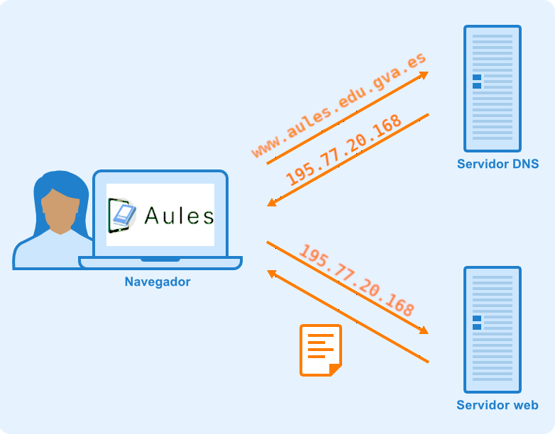
La utilidad del sistema DNS es fundamental para el funcionamiento de Internet y de muchas redes privadas. Entre sus principales funciones encontramos:
-
Simplifica el acceso a los servicios de red: permite utilizar nombres fáciles de recordar en lugar de direcciones IP.
-
Aporta flexibilidad: si un servicio cambia de servidor o de dirección IP, es posible modificar la información DNS manteniendo el mismo nombre de dominio. De esta forma, los usuarios pueden continuar utilizando el mismo nombre para acceder al servicio.
-
Permite localizar servicios de red: los dispositivos pueden consultar el DNS para obtener información sobre la ubicación de diferentes servicios, como servidores web o servidores de correo electrónico.
-
Facilita la administración de redes: en las redes locales también es posible utilizar DNS para asociar nombres a equipos y servicios, evitando tener que recordar sus direcciones IP.
-
Interviene en numerosos servicios de Internet, como:
- Acceder a páginas web.
- Enviar y recibir correos electrónicos.
- Utilizar servicios de streaming.
- Jugar a videojuegos online.
- Acceder a diferentes servicios y aplicaciones de Internet.
2 - Protocolo DNS
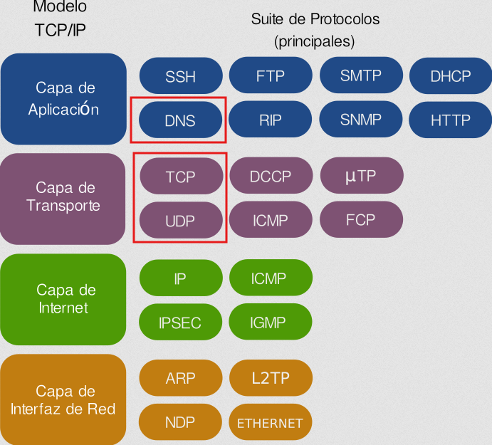
- El servicio de nombres de dominio utiliza el protocolo DNS para realizar las consultas y las respuestas.
- Se trata de un protocolo de capa de aplicación que puede utilizar tanto UDP como TCP en la capa de transporte.
- Habitualmente, tanto las consultas del cliente como las respuestas del servidor caben en un datagrama (512 bytes) y se utiliza UDP (de hecho, generalmente se dice que el DNS usa UDP).
- Si la información a transmitir es amplia (por ejemplo, una respuesta con una lista con mucha información), la comunicación pasa a TCP automáticamente.
- Otro caso en el que la comunicación es por TCP es cuando se realiza la transferencia de información de una zona entre servidores primarios y secundarios. El servidor DNS utiliza el puerto privilegiado 53.
Resumen de los que hemos visto
- El protocolo DNS es habitualmente UDP, pero puede ser TCP y UDP.
- Se trata de un protocolo de capa de aplicación y utiliza el puerto 53.
-
Los datagramas DNS se componen de varios apartados, tal como se puede ver en la siguiente consulta con host:
Ejemplo de consulta DNS
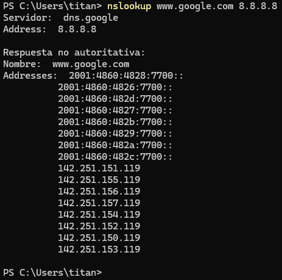
3 - Mecanismos de comunicación DNS
La comunicación DNS es un mecanismo de consulta/respuesta entre el cliente y el servidor. Los datagramas, por tanto, serán de query (consulta) o de answer (respuesta).
Los apartados que componen un mensaje DNS son:
- HEADER. Cabecera del mensaje que indica si se trata de una consulta o de una respuesta. Contiene el id (identificador) del mensaje, flags y un resumen de qué secciones del mensaje llevan información y cuánta.
- QUESTION. Esta sección contiene la consulta que se ha efectuado, es decir, qué dato se ha pedido al servidor. Puede ser la resolución de un nombre de dominio a una dirección IP, pedir la lista de servidores de impresión, etc.
- ANSWER. Sección que contiene la respuesta obtenida del servidor. Esta respuesta será autoritativa o no en función de si el servidor que responde es autoritativo para esa zona: cuando la respuesta procede de un servidor caché/resolver (no autoritativo), algunas utilidades de consulta la muestran como non-authoritative answer.
- AUTHORITY. Esta sección contiene las respuestas que son autoritativas para la consulta efectuada. Evidentemente, puede estar vacía.
- ADDITIONAL. Contiene información adicional para completar la respuesta. En el ejemplo se observa que completa la resolución de los nombres de máquina que aparecen en la sección ANSWER, indicando su dirección IP correspondiente.
Ejemplo de comunicación DNS
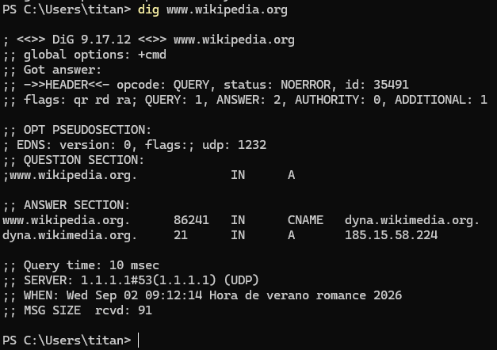
4 - Servidores DNS
- Un servidor DNS es el elemento de la infraestructura de red que aloja la información de uno o más espacios de nombres de dominio y que responde a las consultas (queries) que le llegan, ya sea resolviéndolas directamente (si tiene autoridad sobre los datos) o remitiendo al cliente hacia otros servidores que sí la tienen.
- Un mismo servidor puede ser autoritativo para unas zonas y actuar solo como intermediario (resolutor) para otras, y puede alojar simultáneamente varias zonas con roles distintos.
4.1 Zonas DNS
- Una zona DNS es la porción concreta del espacio de nombres que un servidor determinado aloja y sobre la cual puede responder consultas. Por ejemplo, el servidor autoritativo que resuelve
www.edu.gva.escontiene la zonaedu.gva.es. - La información de una zona (sus registros de recursos) se puede almacenar en un archivo de texto en el propio servidor o en un directorio centralizado (como AD DS en entornos Windows). En este último caso se habla de zonas integradas, que permiten que varios servidores compartan y escriban sobre la misma copia de datos.
4.2 Tipos de zona
- Zona primaria. Es el origen editable de la zona: todas las altas, bajas y modificaciones de registros se hacen aquí. El servidor que la aloja se llama servidor primario de esa zona.
- Zona secundaria. Es una copia de solo lectura de una zona primaria, obtenida por red desde otro servidor DNS. No se puede editar directamente ni almacenarse como zona integrada, ya que siempre depende de la fuente primaria.
- Zona de rutas internas (stub). Contiene únicamente los registros NS (y sus direcciones) necesarios para identificar qué servidores son autoritativos para una zona concreta, sin el resto de datos. Se usa para mantener actualizada la lista de servidores de una zona delegada y para mejorar la resolución evitando consultas innecesarias a los servidores raíz.
- Zona de búsqueda inversa. Permite la consulta contraria a la habitual: a partir de una dirección IP, obtener el nombre del equipo (en vez de nombre → IP).
Zona de búsqueda inversa
- Para llevar a cabo la resolución de nombre inversa, el DNS utiliza un dominio especial llamado in-addr.arpa (para IPv4) o ip6.arpa (para IPv6).
-
La dirección IP se transforma e inserta dentro de este dominio en orden inverso a como se escribe normalmente.
Ejemplo
- Para averiguar el nombre asociado a la IP
192.168.10.20, el resolver consulta el dominio:
20.10.168.192.in-addr.arpa - El registro que responde a este tipo de consulta se llama registro PTR (pointer record), y es el encargado de indicar qué nombre de dominio corresponde a esa dirección IP.
- Para averiguar el nombre asociado a la IP
-
Usos habituales de la resolución inversa:
- Verificación de correo electrónico: muchos servidores de correo comprueban que la IP del remitente tenga un PTR válido antes de aceptar el mensaje, como medida contra el spam.
- Diagnóstico y registro (logging): en herramientas como
traceroute,pingo en los logs de un servidor, es más legible ver el nombre de una máquina que su dirección IP. - Auditoría y seguridad: permite identificar qué equipo hay detrás de una IP concreta durante el análisis de tráfico o incidentes.
A diferencia de la resolución directa, la resolución inversa requiere que el administrador de la red configure explícitamente esta zona y sus registros PTR, ya que no se genera de forma automática a partir de los registros A o AAAA.
Importante
Un mismo servidor no puede alojar a la vez una zona primaria y una secundaria o stub para el mismo nombre de dominio.
4.3 Transferencia de zona
Se conoce como transferencia de zona el proceso de replicar el contenido de una zona desde el servidor que la genera (primario) hacia los servidores que tienen copia de ella (secundarios). Se puede iniciar de dos maneras:
- Por notificación: el servidor primario avisa a los secundarios cuando ha habido un cambio (mecanismo definido en el RFC 1996).
- Por intervalo de refresco: al arrancar el servicio o al caducar dicho intervalo (por defecto, 15 minutos, definido en el registro SOA de la zona), el servidor secundario consulta al primario para comprobar si hay cambios.
Hay dos tipos de transferencia:
- AXFR (transferencia completa): replica todo el archivo de zona.
- IXFR (transferencia incremental): replica solo los registros modificados desde la última sincronización, reduciendo el tráfico de red.
Por motivos de seguridad, es recomendable restringir qué servidores pueden solicitar una transferencia de zona (habitualmente, solo los indicados en los registros NS de la zona), ya que una transferencia abierta a cualquier host expondría toda la estructura de la red interna.
4.4 Delegación de zonas
El espacio de nombres se puede dividir en varias zonas para delegar su administración a otros departamentos u organizaciones (por ejemplo, delegar filial.empresa.com desde la zona empresa.com). Para cada delegación es necesario crear registros NS en la zona padre que apunten a los servidores autoritativos de la nueva subzona, de modo que otros servidores y clientes puedan encontrarlos correctamente.
4.5 Control de acceso
El acceso de escritura a una zona y a sus registros se puede restringir mediante listas de control de acceso (ACL), que determinan qué usuarios o grupos pueden crear o modificar registros concretos. Esto permite, por ejemplo, reservar ciertos nombres para que solo determinados usuarios los puedan registrar, protegiendo la zona de modificaciones no autorizadas sin dejar de permitir su uso general.
5 - Consultas al DNS
En una búsqueda de DNS habitual se producen tres tipos de consultas.
Al usar una combinación de estas consultas, un proceso optimizado para la resolución de DNS puede conllevar una reducción de la distancia recorrida.
En una situación ideal, los datos de registro almacenados en la memoria caché estarán disponibles, lo cual permitirá que un servidor de nombres DNS devuelva una consulta no recursiva.
- Consulta recursiva: en una consulta recursiva, un cliente DNS requiere que un servidor DNS (generalmente un resolver DNS recursivo) responda al cliente con el registro del recurso solicitado o un mensaje de error si el resolver no puede encontrar el registro.
- Consulta iterativa: en esta situación, el cliente DNS permitirá que un servidor DNS devuelva la mejor respuesta posible. Si el servidor DNS consultado no cuenta con un nombre que corresponda con el de la consulta, devolverá una referencia a un servidor DNS autoritativo para un nivel inferior del espacio de nombres de dominio. El cliente DNS hará a continuación una consulta a la dirección de referencia. Este proceso continúa con servidores DNS adicionales que siguen en la cadena de consulta hasta que se produzca un error o se supere el tiempo de espera.
- Consulta no recursiva: generalmente se produce cuando un cliente resolver DNS consulta a un servidor DNS por un registro al que tiene acceso porque o bien es autoritativo para el registro o el registro existe dentro de su caché. Generalmente, el servidor DNS almacenará en caché registros DNS para prevenir el consumo de ancho de banda adicional y la carga en los servidores que preceden en la cadena.
6 - Funcionamiento del DNS
El funcionamiento del DNS se basa en un sistema jerárquico y distribuido conocido como resolución de nombres de dominio. Su función principal es obtener información asociada a un nombre de dominio, como su dirección IP.
Cuando escribimos la dirección web www.aules.edu.gva.es en el navegador, el dispositivo necesita obtener la dirección IP asociada a ese nombre antes de poder establecer la comunicación con el servicio.
La resolución de un nombre puede implicar diferentes servidores DNS. De forma simplificada, el proceso es el siguiente:
6.1 Inicio de la consulta y comprobación de la caché
El dispositivo realiza una consulta a un servidor DNS recursivo, también denominado DNS resolver. Habitualmente, este servidor es proporcionado por el proveedor de acceso a Internet, aunque también puede pertenecer a una organización, una empresa o ser configurado manualmente.
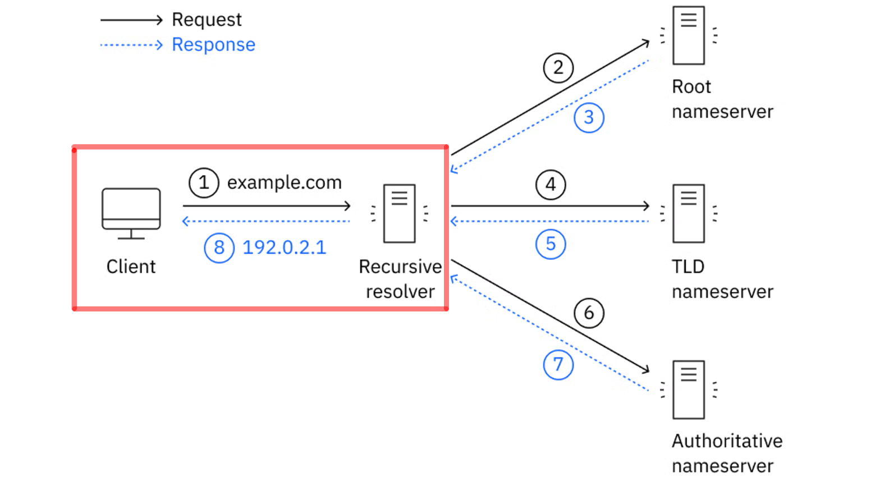
Antes de realizar nuevas consultas, pueden comprobarse diferentes cachés DNS. Por ejemplo, pueden existir cachés en:
- El navegador.
- El sistema operativo.
- El servidor DNS recursivo.
Si alguno de estos componentes dispone de una respuesta válida almacenada en caché, no será necesario repetir todo el proceso de resolución.
La información almacenada en caché tiene un tiempo de validez denominado TTL (Time To Live).
6.2 Consulta al servidor raíz (Root Server)
Si el resolver recursivo no dispone de la respuesta en su caché, comienza la búsqueda consultando la jerarquía DNS.
El primer nivel corresponde a los servidores raíz.
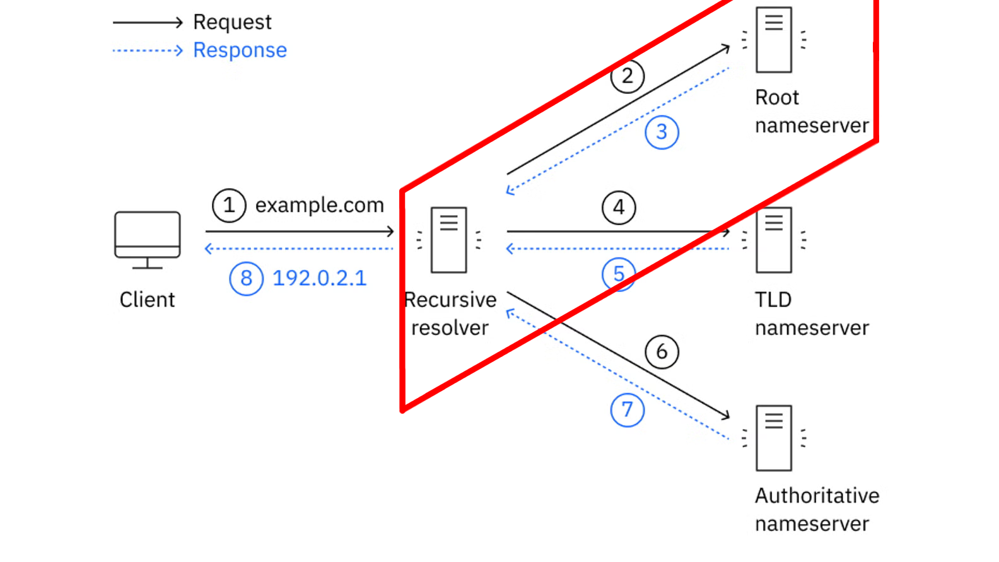
Existen 13 servidores raíz lógicos, identificados mediante las letras de la A a la M. Cada uno de ellos está replicado mediante numerosas instancias distribuidas geográficamente por diferentes lugares del mundo.
Los servidores raíz no conocen directamente la dirección IP del dominio que estamos buscando. Su función es indicar qué servidores son responsables del dominio de nivel superior (TLD) correspondiente.
Por ejemplo, si estamos buscando:
```text
www.aules.edu.gva.es
```
el servidor raíz puede indicar qué servidores se encargan del TLD .es.
6.3 Consulta al servidor de nivel superior (TLD)
El resolver recursivo consulta entonces a un servidor TLD (Top-Level Domain).
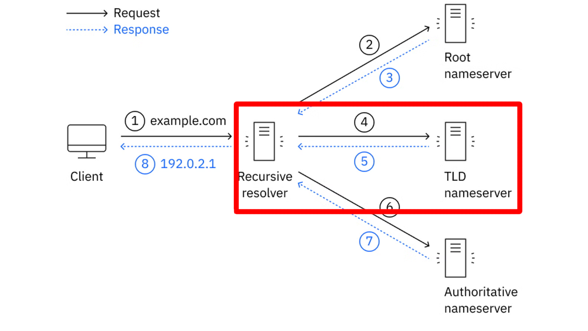
Un TLD es la parte final de un nombre de dominio, como:
```text
.com
.es
.org
.net
```
El servidor TLD no proporciona necesariamente la dirección IP del equipo que buscamos. Su función es indicar cuáles son los servidores DNS autoritativos encargados del dominio correspondiente.
Por ejemplo, los servidores responsables del TLD .es pueden indicar qué servidores DNS son autoritativos para:
```text
aules.edu.gva.es
```
6.4 Consulta al servidor de nombres autoritativo
El resolver recursivo consulta finalmente a uno de los servidores DNS autoritativos responsables de la zona correspondiente.
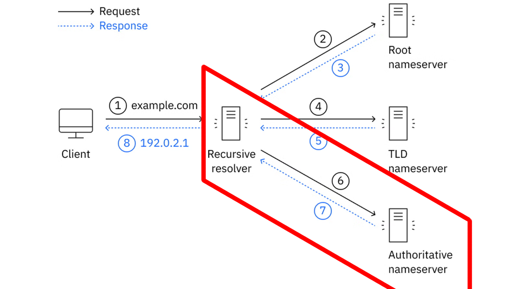
Un servidor autoritativo dispone de la información oficial de la zona DNS que administra. Esta información contiene diferentes registros DNS que permiten conocer los servicios asociados a los nombres del dominio.
Por ejemplo, un registro A puede asociar un nombre con una dirección IPv4:
```text
www.aules.edu.gva.es → 195.77.20.168
```
Para IPv6 se utiliza normalmente un registro AAAA.
Un dominio puede disponer de varios servidores autoritativos, proporcionando redundancia y disponibilidad.
6.5 Resolución final y almacenamiento en caché
El resolver recursivo recibe la respuesta del servidor autoritativo y se la proporciona al dispositivo que realizó la consulta.
El navegador ya puede utilizar la dirección IP obtenida para establecer una conexión con el servicio correspondiente.
Además, el resolver puede almacenar la respuesta en su caché DNS durante el tiempo indicado por el TTL del registro.
De esta forma, si otro dispositivo realiza posteriormente la misma consulta, el resolver puede responder utilizando la información almacenada en caché sin tener que volver a consultar a los servidores raíz, TLD y autoritativos.
6.6 Resumen del proceso
De forma simplificada, podemos representar la resolución de un nombre de dominio de la siguiente manera:
```mermaid
flowchart TD
A[Cliente] -->|1. Consulta DNS| B[DNS recursivo<br/>Resolver]
B -->|2-3. Consulta a servidor raíz | C[Servidor raíz]
C -->|4-5. Consulta a servidor TLD| D["Servidor TLD<br/>(.es)"]
D -->|6-7. Indica los servidores<br/>autoritativos| E[Servidor autoritativo]
E -->|Registro A / AAAA| F[Dirección IP]
F -->|192.0.2.1| G[DNS Resolver]
G -->|8. Entrega de IP a cliente <br/>192.0.2.1| H[Cliente]
H -->|192.0.2.1| I["Servidor (web)"]
```
Resumen de los que hemos visto
- El cliente no suele consultar directamente a los servidores raíz, TLD y autoritativos.
- Normalmente realiza una consulta a un resolver DNS recursivo, que se encarga de realizar las consultas necesarias y devolver finalmente la respuesta al cliente.
-
Por tanto, debemos distinguir entre:
Servidor DNS Función principal DNS recursivo (Resolver) Realiza la búsqueda en nombre del cliente y devuelve la respuesta Servidor raíz (Root) Indica qué servidores gestionan el TLD solicitado Servidor TLD Indica qué servidores son autoritativos para el dominio Servidor autoritativo Proporciona la información oficial de la zona DNS -
Esta jerarquía permite que el DNS sea un sistema distribuido, escalable y resistente, capaz de gestionar una enorme cantidad de nombres de dominio sin depender de un único servidor central.
7 - Jerarquía de nombres DNS
El sistema DNS está organizado mediante una estructura jerárquica, similar a un árbol invertido. En la parte superior se encuentra la raíz (.) y, a medida que descendemos por la jerarquía, encontramos los diferentes dominios y subdominios.
Si tenemos el siguiente nombre:
Su estructura jerárquica sería:
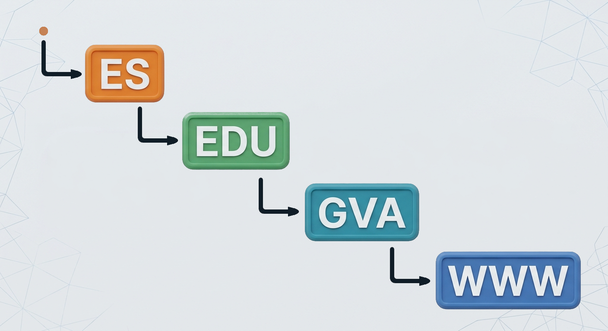
Cada nivel representa una parte diferente de la jerarquía DNS.
7.1 La raíz DNS
En la parte superior de la jerarquía se encuentra la raíz DNS, representada mediante un punto:
```text
.
```
La raíz es el nivel superior de todo el sistema DNS.
Un nombre de dominio completamente cualificado (FQDN, Fully Qualified Domain Name) podría escribirse de la siguiente manera:
Normalmente este punto final no se escribe cuando utilizamos un nombre de dominio en un navegador pero forma parte de la estructura completa del nombre.
7.2 Dominios de nivel superior (TLD)
Por debajo de la raíz se encuentran los dominios de nivel superior, conocidos como TLD (Top-Level Domain).
Algunos ejemplos son:
```text
.com
.org
.net
.es
.edu
```
Existen diferentes tipos de TLD. Por ejemplo:
- gTLD (generic Top-Level Domain):
.com,.org,.net, etc. - ccTLD (country code Top-Level Domain):
.es,.fr,.it,.de, etc.
En el caso de:
```text
www.edu.gva.es
```
el TLD es:
```text
.es
```
7.3 Dominio
A la izquierda del TLD encontramos otros niveles de la jerarquía.
En el caso de:
```text
www.edu.gva.es
```
Un dominio dentro del TLD .es sería.
```text
gva.es
```
7.4 Subdominios
Un subdominio es un dominio que se encuentra por debajo de otro dominio dentro de la jerarquía DNS.
En el caso de:
```text
gva.es
```
podría tener diferentes subdominios:
```text
edu.gva.es
san.gva.es
just.gva.es
```
Y, a su vez, edu.gva.es podría tener otros niveles:
```text
www.edu.gva.es
aules.edu.gva.es
correo.edu.gva.es
```
Los subdominios permiten organizar diferentes servicios, departamentos o recursos dentro de una misma estructura de nombres.
7.5 FQDN
Un FQDN (Fully Qualified Domain Name), o nombre de dominio completamente cualificado, identifica de forma completa una posición dentro de la jerarquía DNS.
En el caso de tendríamos:
```text
www.edu.gva.es.
```
Importante
Los nombres DNS se interpretan de derecha a izquierda.
7.6 Nombre de host
En una red, un host es un dispositivo o sistema que puede comunicarse mediante una red.
En DNS, un nombre como www.edu.gva.es puede utilizarse para identificar un servicio o un host.
Por ejemplo, podríamos tener:
```text
www.edu.gva.es
correo.edu.gva.es
ftp.edu.gva.es
```
Cada nombre podría estar asociado mediante DNS a una dirección IP diferente:
```text
www.edu.gva.es → 192.168.1.10
correo.edu.gva.es → 192.168.1.20
ftp.edu.gva.es → 192.168.1.30
```
Importante
- Cada nombre DNS no representa necesariamente un único equipo físico.
- Un mismo servicio puede estar distribuido entre varios servidores y una misma dirección IP puede utilizarse para diferentes nombres.
7.7 Zona DNS
Una zona DNS es una parte de la jerarquía DNS que está administrada por una organización o servidor DNS determinado.
La zona contiene los registros DNS que proporcionan información sobre los nombres y servicios que administra.
Por ejemplo, una organización podría administrar la zona:
```text
edu.gva.es
```
y dentro de ella tener, en un primer escenario, todos los nombres agrupados en una única zona:
```text
www.edu.gva.es
correo.edu.gva.es
ftp.edu.gva.es
```
La zona podría contener registros como:
```text
www.edu.gva.es → 192.168.10.10
correo.edu.gva.es → 192.168.10.20
ftp.edu.gva.es → 192.168.10.30
```
Dominio y zona no son exactamente lo mismo
- Aunque en el ejemplo anterior el dominio
edu.gva.esy la zona que lo administra coinciden, dominio y zona son conceptos diferentes. - Un dominio representa una parte de la jerarquía de nombres DNS, mientras que una zona representa una parte de esa jerarquía que está administrativamente gestionada mediante servidores DNS autoritativos.
- Un dominio puede contener diferentes subdominios y estos pueden estar delegados en otras zonas. Veamos un segundo escenario, alternativo al anterior, en el que la organización decide dividir la administración de
edu.gva.esen dos zonas distintas:
En este segundo escenario, la organización administra directamente una zona conflowchart TD A[edu.gva.es] --> X(( )) X --> B[Zona A] X --> C[Zona B] B --> D[www.edu.gva.es </br>+</br>correo.edu.gva.es] C --> E[ftp.edu.gva.es] style X fill:none,stroke:nonewww.edu.gva.esycorreo.edu.gva.es(Zona A), mientras queftp.edu.gva.esestá delegado a otros servidores DNS que administran la Zona B. Ambas zonas siguen perteneciendo al mismo dominioedu.gva.es, pero están gestionadas de forma independiente.
7.8 Resumen de la jerarquía DNS
Podemos resumir los diferentes conceptos mediante la siguiente imagen:
De esta forma, el DNS organiza los nombres mediante una estructura jerárquica en la que cada nivel puede ser administrado de forma independiente.
| Concepto | Significado | Ejemplo |
|---|---|---|
| Raíz | Nivel superior de la jerarquía DNS | . |
| TLD | Dominio de nivel superior | .es |
| Dominio | Nombre registrado dentro de un TLD | gva.es |
| Subdominio | Dominio situado dentro de otro dominio | edu.gva.es |
| FQDN | Nombre DNS completamente cualificado (incluye el punto raíz final) | www.edu.gva.es. |
| Host | Equipo o servicio identificado mediante un nombre | www.edu.gva.es |
| Zona | Parte de la jerarquía administrada por unos servidores autoritativos concretos | edu.gva.es (zona delegada, con sus propios servidores autoritativos dentro del dominio gva.es) |
8 - Servidores DNS públicos y privados
No todos los servidores DNS tienen la misma función ni están disponibles para los mismos usuarios.
Dependiendo de quién pueda utilizarlos y de dónde se encuentren, podemos distinguir entre servidores DNS públicos y servidores DNS privados.
8.1 Servidores DNS públicos
Un servidor DNS público es un servidor DNS que ofrece su servicio de resolución de nombres a usuarios y dispositivos de Internet de forma pública.
Estos servidores suelen estar gestionados por empresas, organizaciones o proveedores de servicios de Internet y pueden ser utilizados por cualquier usuario que tenga acceso a Internet.
Algunos ejemplos conocidos son:
| Servicio DNS | Dirección IPv4 |
|---|---|
| Google Public DNS | 8.8.8.8 |
| Google Public DNS | 8.8.4.4 |
| Cloudflare DNS | 1.1.1.1 |
| Cloudflare DNS | 1.0.0.1 |
| Quad9 | 9.9.9.9 |
Por ejemplo, podemos configurar un ordenador para que utilice:
```text
Servidor DNS preferido: 1.1.1.1
Servidor DNS alternativo: 1.0.0.1
```
A partir de ese momento, las consultas DNS realizadas por el dispositivo podrán enviarse a los servidores de Cloudflare.
Importante
- Un servidor DNS público no significa que sea un servidor raíz ni un servidor autoritativo.
- Por ejemplo,
1.1.1.1es un resolver DNS recursivo público. Recibe consultas de los clientes y, cuando es necesario, realiza las consultas correspondientes a otros servidores DNS de la jerarquía.
8.2 ¿Por qué utilizar un DNS público?
Existen diferentes motivos para utilizar un servidor DNS público en lugar del servidor DNS proporcionado automáticamente por nuestro proveedor de Internet.
8.2.1 Rendimiento
Algunos proveedores de DNS público disponen de una infraestructura distribuida por diferentes partes del mundo. Esto permite que las consultas puedan ser atendidas desde servidores cercanos al usuario.
El tiempo necesario para obtener una respuesta DNS se denomina habitualmente latencia DNS.
Una menor latencia puede hacer que la resolución de nombres sea más rápida.
8.2.2 Disponibilidad y redundancia
Los grandes proveedores de DNS público utilizan infraestructuras distribuidas y redundantes.
Si uno de sus servidores o centros de datos deja de funcionar, otros servidores pueden continuar atendiendo las consultas.
Esto proporciona una elevada disponibilidad del servicio.
8.2.3 Seguridad
Algunos servicios DNS públicos incorporan mecanismos de seguridad adicionales, como el bloqueo de determinados dominios asociados a:
- Malware.
- Phishing.
- Botnets.
- Otros tipos de amenazas.
Por ejemplo, algunos resolvers públicos están diseñados específicamente para proporcionar una capa adicional de protección frente a determinados dominios maliciosos.
DNS y seguridad
- El uso de un DNS público no garantiza por sí mismo que una conexión sea segura.
- DNS se encarga principalmente de resolver nombres. La seguridad de la comunicación dependerá también de otros mecanismos, como HTTPS/TLS, firewalls, sistemas de detección de intrusiones y otros controles de seguridad.
8.3 Servidores DNS privados
Un servidor DNS privado es un servidor DNS que está destinado a una organización, red o conjunto limitado de usuarios.
A diferencia de un servidor DNS público, no está pensado para que cualquier usuario de Internet pueda realizar consultas libremente.
Los servidores DNS privados son muy habituales en:
- Empresas.
- Centros educativos.
- Organismos públicos.
- Redes domésticas.
- Centros de datos.
- Redes virtuales en la nube.
Ejemplo de red empresarial
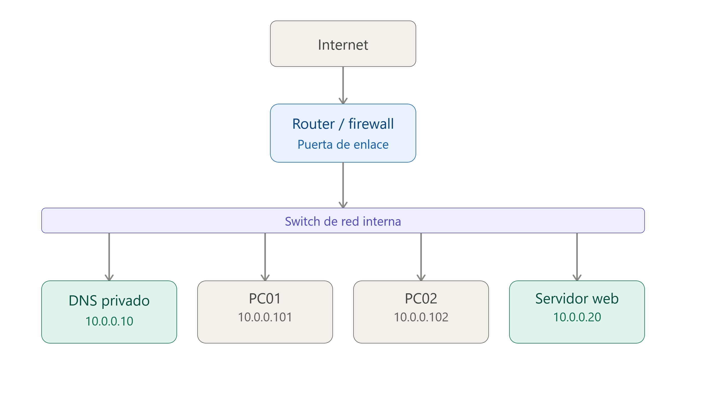
Dónde:10.0.0.0/24es la red de la empresa.10.0.0.10es el servidor DNS interno.10.0.0.20es el servidor Web de la empresa.10.0.0.101es un dispositivo conectado a la red (p.e.: impresora) con el nombre DNS impresora.empresa.local10.0.0.102otro dispositivo conectado a la red (p.e.: nas) con el nombre DNS nas.empresa.local
Estos nombres pueden (suelen) no existir en el DNS público de Internet
8.4 DNS privado y acceso a Internet
Un servidor DNS privado no tiene por qué limitarse a resolver nombres internos.
También puede actuar como resolver recursivo para los dispositivos de la organización.
Si miramos el siguiente esquema veremos que el servidor DNS puede resolver tanto servidor.empresa.local utilizando sus zonas internas como www.google.com, www.wikipedia.org y www.aules.edu.gva.es realizando consultas recursivas hacia otros servidores DNS.
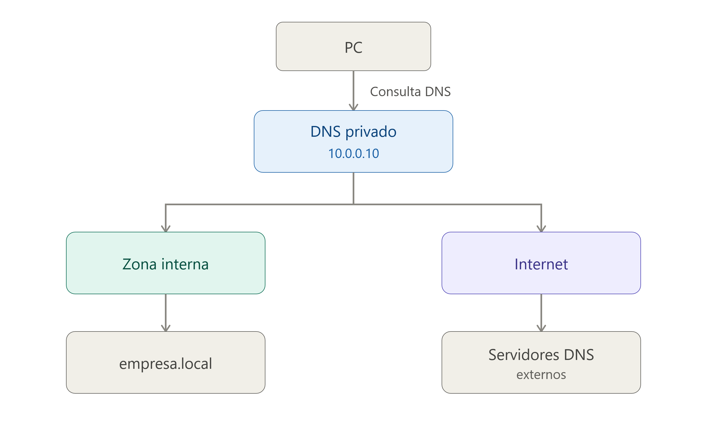
8.5 Servidor DNS privado en una red local
En una red local, los equipos suelen obtener automáticamente la dirección del servidor DNS mediante el protocolo DHCP.
Configurción dee red devuelta por el servidor DHCP
Configuración recibida mediante DHCP
Dirección IP: 192.168.10.101
Máscara: 255.255.255.0
Puerta de enlace: 192.168.10.1
Servidor DNS: 192.168.10.10
Dónde:
- El ordenador cliente recibe la IP
192.168.10.101. - El ordenador cliente utilizará
192.168.10.10para realizar consultas DNS. - El ordenador cliente utilizará
192.168.10.1como puerta de enlace es decir para acceder a internet. - El servidor DNS privado podría resolver tanto nombres internos como nombres de Internet.
Ejemplo de consulta DNS interna
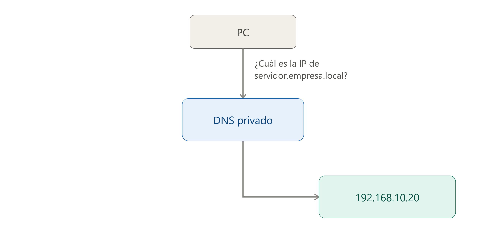
Ejemplo de consulta DNS externa
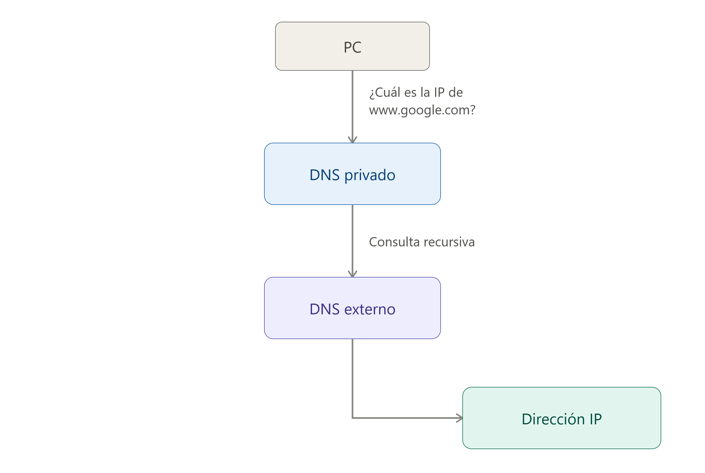
8.6 Comparativa DNS público vs. DNS privado
Podemos comparar ambos tipos de servidores:
| Característica | DNS público | DNS privado |
|---|---|---|
| Acceso | Público | Restringido |
| Usuarios | Cualquier usuario | Usuarios de una organización o red |
| Uso habitual | Resolver nombres de Internet | Resolver nombres internos y externos |
| Ejemplo | 1.1.1.1 |
192.168.10.10 |
| Administración | Proveedor externo | Organización |
| Nombres internos | Normalmente no | Sí |
| Uso en empresas | Posible | Muy habitual |
| Accesible desde Internet | Generalmente sí | Normalmente no |
9 - Evolución del protocolo DNS y seguridad
El protocolo DNS ha evolucionado para adaptarse a las necesidades cada vez mayores de las redes y, especialmente, para solucionar algunos de sus problemas de seguridad.
Dos de las principales tecnologías relacionadas con esta evolución son DDNS (Dynamic DNS) y DNSSEC (DNS Security Extensions).
9.1 DDNS
El DDNS (Dynamic DNS o DNS dinámico) permite actualizar automáticamente los registros de un servidor DNS cuando cambia la dirección IP asociada a un nombre de dominio.
Su principal utilidad es permitir que un dispositivo o servidor cuya dirección IP es dinámica pueda seguir siendo accesible mediante un nombre de dominio, aunque su dirección IP cambie.
ejemplo
Imaginemos un servidor al que queremos acceder utilizando el nombre:
Si el servidor tiene una dirección IP dinámica, esta podría cambiar periódicamente:
y posteriormente:
El servicio DDNS se encarga de actualizar el registro DNS para que el nombre continúe apuntando a la dirección IP actual.
Un mecanismo habitual consiste en que un dispositivo o servicio con conocimiento del cambio de IP comunique la nueva dirección al servidor DNS para actualizar el registro correspondiente.
En determinadas redes, el servidor DHCP puede participar en este proceso. Cuando asigna o modifica una dirección IP, puede actualizar también los registros DNS asociados. De esta forma, DHCP y DNS pueden trabajar conjuntamente para mantener actualizada la información de nombres y direcciones.
Importante:
DDNS no es un protocolo DNS diferente. Es un mecanismo o servicio que permite realizar actualizaciones dinámicas de los registros DNS.
9.2 DNSSEC
DNSSEC (Domain Name System Security Extensions o extensiones de seguridad para el DNS) es un conjunto de extensiones que permite añadir autenticidad e integridad a la información proporcionada por DNS.
El funcionamiento tradicional de DNS presenta un problema: un atacante podría intentar proporcionar al cliente una respuesta DNS falsa.
Ejemplo
Ante una consulta como:
un atacante podría intentar conseguir que el cliente recibiera una dirección IP incorrecta:
DNSSEC utiliza firmas digitales para que el resolver DNS pueda comprobar que los datos recibidos son auténticos y que no han sido modificados.
Por tanto, DNSSEC permite proteger principalmente:
- La autenticidad: comprobar que los datos DNS proceden de la zona DNS que tiene autoridad sobre ellos.
- La integridad: comprobar que los datos no han sido modificados durante su transmisión.
Importante
- DNSSEC no cifra las consultas ni las respuestas DNS. Por tanto, no proporciona confidencialidad.
- Tampoco garantiza por sí mismo que el usuario esté conectado directamente con su servidor DNS real. Su objetivo es permitir que el resolver pueda validar criptográficamente la autenticidad de los datos DNS recibidos.
Importante
- DNSSEC protege la información DNS, pero no protege la disponibilidad del servicio. Por tanto, no evita los ataques de denegación de servicio (DoS o DDoS).
- Además, las respuestas DNSSEC suelen ser de mayor tamaño debido a la información criptográfica que contienen. Esto puede contribuir a que determinadas configuraciones de DNS sean utilizadas en ataques de amplificación DNS, aunque DNSSEC no sea la causa de estos ataques.
En resumen
DNSSEC proporciona autenticidad e integridad, pero no confidencialidad ni disponibilidad.
9.3 Envenenamiento de la caché DNS
Uno de los principales problemas de seguridad del DNS tradicional es que, si un atacante consigue introducir información DNS falsa en la caché de un servidor DNS, puede conseguir que las consultas de los usuarios sean redirigidas a direcciones IP incorrectas.
Este ataque se conoce como DNS cache poisoning o envenenamiento de la caché DNS.
Ejemplo
Un usuario quiere acceder a la web de su banco:
Normalmente, el servidor DNS debería proporcionar la dirección IP legítima: Sin embargo, si un atacante consigue introducir un registro falso en la caché DNS:Los usuarios que reciban esa respuesta podrían ser enviados a un servidor controlado por el atacante.
El objetivo podría ser mostrar una página web falsa que imite a la original para intentar obtener credenciales de acceso, datos personales u otra información confidencial.
Este tipo de ataque puede utilizarse, por ejemplo, como parte de una campaña de phishing.
Prevención contra el DNS cache poisoning
DNSSEC ayuda a prevenir el problema del ataque de envenenamiento de caché porque permite al resolver DNS comprobar mediante firmas digitales que los registros DNS recibidos son auténticos y no han sido modificados.
Importante
- No debemos confundir el envenenamiento de la caché DNS con el hecho de que un servidor DNS haya sido comprometido.
- En el primer caso, el atacante intenta introducir información DNS falsa en la caché de un resolver; en el segundo, el propio servidor DNS puede haber sido tomado bajo control por el atacante.
9.4 Ataques Man-in-the-Middle
Un ataque Man-in-the-Middle (MITM), o hombre en el medio, se produce cuando un atacante consigue situarse entre dos dispositivos que se están comunicando.
Ejemplo
Imaginemos que un usuario cree estar comunicándose directamente con el servidor de su banco:
En un ataque MITM, el atacante intenta situarse entre ambos:
El atacante puede recibir el tráfico, analizarlo y, dependiendo de las circunstancias y de las protecciones utilizadas, intentar modificarlo antes de reenviarlo.
Importante
- Un ataque MITM no es específico de DNS. Puede producirse en diferentes tipos de comunicaciones de red.
- Además, utilizar DNSSEC no sustituye a mecanismos como HTTPS/TLS, que son los encargados de proteger la comunicación entre el navegador y el servidor web.
10 - Registros DNS
10.1 Introducción
-
Los registros DNS son datos que contienen información sobre los nombres de dominio y los servicios asociados a ellos.
-
En los servidores DNS autoritativos, estos registros pueden almacenarse en archivos de zona. Un archivo de zona es un archivo de texto que contiene los registros DNS y determinadas directivas que describen una zona DNS.
-
La sintaxis de los archivos de zona establece cómo deben escribirse estos registros y directivas para que el servidor DNS pueda interpretarlos correctamente.
Ejemplo
Cuando un usuario introduce en su navegador una dirección como:
el navegador necesita conocer la dirección IP asociada al nombre de host www.ejemplo.com. Para obtenerla, se inicia una consulta DNS.
El equipo del usuario normalmente realiza la consulta a un servidor DNS recursivo o resolver. Este servidor puede disponer de la respuesta en su caché. Si no la tiene, puede realizar consultas a otros servidores DNS hasta encontrar la información necesaria.
-
En una resolución DNS pueden intervenir diferentes tipos de servidores, entre ellos:
- Servidores DNS recursivos: reciben las consultas de los clientes y se encargan de obtener la respuesta.
- Servidores DNS raíz: indican qué servidores son responsables de los diferentes dominios de nivel superior (Top-Level Domains o TLD), como
.com,.orgo.es. - Servidores DNS de TLD: indican cuáles son los servidores autoritativos responsables de un dominio concreto.
- Servidores DNS autoritativos: contienen la información oficial de una zona DNS y proporcionan los registros correspondientes.
10.2 TTL (Time To Live)
- Los registros DNS incluyen un valor denominado TTL (Time To Live).
-
El TTL indica durante cuánto tiempo puede mantenerse un registro DNS en la caché de un servidor DNS recursivo antes de que deba volver a consultarse.
Ejemplo
Si un registro tiene:
el valor
3600representa un TTL de 3600 segundos, es decir, 1 hora.Durante ese periodo, un servidor DNS recursivo puede utilizar la información almacenada en su caché sin tener que volver a consultar al servidor autoritativo.
Importante
el TTL no indica cada cuánto tiempo se actualiza el registro en el servidor DNS autoritativo. Indica cuánto tiempo otros servidores pueden conservar ese registro en su caché.
10.3 Tipos de Registros DNS
10.3.1 Registro A (Address)
- Los registros de direcciones, o registros A, son los registros DNS más utilizados. Crean una conexión directa entre una dirección IPv4 y un nombre de dominio.
- Permiten que un navegador web cargue un sitio utilizando un nombre de dominio legible, evitando que el usuario tenga que recordar complejas direcciones IP numéricas.
- Redundancia: Es posible configurar múltiples registros A para un mismo dominio, lo que proporciona respaldo y redundancia en caso de fallos.
- Seguridad: Se utiliza también en listas negras basadas en DNS (DNSBL) para bloquear correos provenientes de fuentes de spam conocidas.
Sintaxis típica
midominio.com. IN A 192.0.2.15.
10.3.2 Registro AAAA (Quad A)
Funciona de manera similar al registro A, pero conecta nombres de dominio con direcciones IPv6. Aunque menos común que IPv4, su adopción global va en aumento para resolver el problema del agotamiento de las direcciones IPv4 tradicionales.
Sintaxis típica
midominio.net. IN AAAA 2001:0db8:85a3:0000:0000:8a2e:0370:1234
10.3.3 Registro CNAME (Canonical Name)
Los registros de nombres canónicos, o registros CNAME, dirigen un dominio de alias a un dominio canónico. Los registros CNAME se usan a menudo para asignar un nombre de dominio con un alias al dominio principal que lleva el registro A o AAAA.
Ejemplo
- En lugar de crear dos registros A para
www.example.comyproduct.example.com, puede vincularproduct.example.coma un registro CNAME que luego se vincula a un registro A paraexample.com. - El valor es que si la dirección IP cambia para el dominio raíz, solo se tendrá que actualizar el registro A y el CNAME se actualizará en consecuencia.
- Restricciones de configuración:
- No se puede ubicar un registro CNAME en el dominio de raíz.
- Los registros de servidores de correo (MX) y servidores de nombres (NS) nunca deben estar dirigidos a un CNAME.
- Aunque técnicamente es posible apuntar un CNAME a otro CNAME, esta práctica no se recomienda porque resulta ineficaz y ralentiza la velocidad de carga.
10.3.4 Registro DNAME
Los registros de nombres de delegación, o registros DNAME, se utilizan para redirigir varios subdominios con un registro y apuntarlos a otro dominio.
Ejemplo
- Un registro DNAME que vincule
domain.comaexample.comvincularáproduct.domain.com,trial.domain.com, yblog.domain.comaexample.com. - Estos registros son útiles para administrar dominios a gran escala y para administrar cambios de nombres de dominio al garantizar que los subdominios estén vinculados correctamente.
10.3.5 Registros CAA
Los registros de autorización de autoridad de certificación, o registros CAA, permiten a los propietarios de dominios especificar qué autoridades de certificación (CA) pueden emitir certificados para su dominio.
Una CA es una organización que valida la identidad de los sitios web y los conecta a claves criptográficas mediante la emisión de certificados digitales.
10.3.6 Registro NS (Nameserver)
- Especifica qué servidor de nombres o servidor DNS en particular actúa como la autoridad autoritativa para un dominio o subdominio.
Importante
- El registro NS indica qué servidor alberga físicamente los archivos de zona del dominio.
- Sin un registro NS debidamente configurado, es imposible cargar o acceder a un sitio web.
10.3.7 Registro MX (Mail Exchange)
Los registros MX son indispensables para la recepción de correos electrónicos bajo el nombre de dominio.
Indica cuáles son los servidores de correo autorizados para recibir los mensajes mediante el protocolo SMTP.
Sintaxis típica
midominio.com. IN MX 10 mail.midominio.com.
10.3.8 Registro TXT
Permite que un administrador pueda almacenar notas de texto en el registro. Estos registros se suelen utilizar para la seguridad del correo electrónico.
10.3.9 Registros CERT
Los certificados, o registros CERT, almacenan certificados que verifican la autenticidad de todas las partes involucradas.
Este tipo de registro es particularmente valioso cuando se protege y encripta información confidencial.
10.3.10 Registros SOA
Los registros de inicio de autoridad, o registros SOA, almacenan información administrativa importante sobre un dominio. Esta información puede incluir la dirección de correo electrónico del administrador del dominio, información sobre las actualizaciones del dominio y cuándo un servidor debe actualizar su información.
10.3.11 Registros PTR
Los registros de puntero, o registros PTR, funcionan en la dirección opuesta a los registros A. Se utilizan para conectar una dirección IP con un nombre de dominio, en lugar de un nombre de dominio con una dirección IP.
Cuando una búsqueda de DNS comienza con una dirección IP, encuentra el nombre de host correspondiente. Estos registros se utilizan para detectar spam comprobando si las direcciones IP y las direcciones de correo electrónico asociadas son utilizadas por servidores de correo electrónico legítimos. El host del servidor debe configurar los registros PTR.
11 - Herramientas de Diagnóstico Técnico de Registros DNS
Para verificar y solucionar problemas con las zonas DNS, los administradores de sistemas y profesionales de redes emplean herramientas de terminal populares:
nslookup
Permite consultar de forma rápida la dirección IP asociada a un dominio y ver registros básicos como A, MX o NS.
dig (Domain Information Groper)
dig (Domain Information Groper): Ofrece información mucho más profunda y detallada sobre las consultas DNS, incluyendo los tiempos de respuesta del servidor y la jerarquía de autoridad.
12 - Tarea RA2-CEbc-1 - Resolución manual de un dominio
- El proposito de esta tarea es que el alumno comprenda cómo se resuelve un nombre de dominio en Internet y cómo se obtiene la dirección IP asociada a ese nombre.
- Para el ejemplo usaremos el dominio
www.aules.edu.gva.esy realizaremos la resolución de forma manual, paso a paso, para comprender el proceso completo.
12.1 Paso 1: Consulta al servidor raíz
- El primer paso en la resolución de un nombre de dominio es consultar a un servidor raíz. Los servidores raíz son los encargados de dirigir las consultas hacia los servidores de nivel superior (TLD) correspondientes.
Pregunta
- ¿Quién realiza la consulta inicial al servidor raíz para obtener información sobre el TLD?
- ¿Cuál es el TLD (Top-Level Domain) del dominio
www.aules.edu.gva.es? - Consultar la base de datos de iana.org para verificar si el TLD está registrado.
- Consultar la base de datos de iana.org para obtener la lista de servidores raíz y sus direcciones IP (también se puede realizar la consulta a root-servers.org).
- ¿Cuál es la dirección IP del servidor raíz
Verisign, Inc.? -
Para realizar la consulta al servidor raíz, podemos utilizar herramientas como
nslookupodig. Por ejemplo, podemos ejecutar el siguiente comando en la terminal:Explicación de la línea de comando
nslookup: herramienta de línea de comandos para consultar servidores DNS y resolver nombres de dominio.-type=NS: indica que queremos consultar los registros NS (Name Server), es decir, quieremos saber qué servidores DNS son los autoritativos (los "oficiales") para ese dominio.es: el TLD que estamos consultando.-
a.root-servers.net: el servidor raíz al que le estamos preguntando directamente (en lugar de usar el servidor DNS configurado por defecto en nuestro equipo).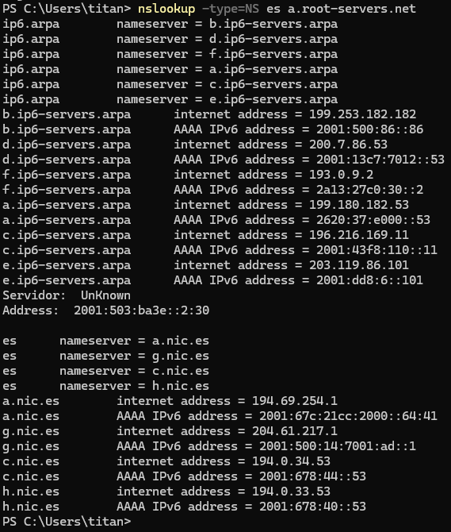
12.2 Paso 2: Consulta del dominio gva.es al servidor de dominio (.es)
Pregunta
- ¿Quién realiza la consulta al servidor autoritativo del TLD .es para obtener información sobre el dominio gva.es?
- ¿Cuál sería la línea de comando para consultar los servidores autoritativos de gva.es?
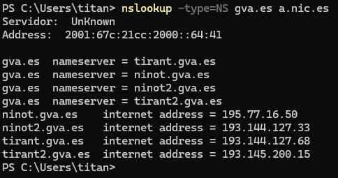
12.3 Paso 3: Consulta del subdominio aules.edu.gva.es al servidor de dominio (gva.es)
Pregunta
- ¿Quién realiza la consulta al servidor autoritativo para obtener información sobre el dominio aules.edu.gva.es?
- ¿Cuál sería la línea de comando para consultar los servidores autoritativos de gva.es?
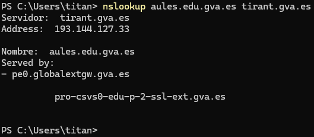
12.4 Paso 4: Consulta del subdominio aules.edu.gva.es
Pregunta
- ¿Quién realiza la consulta al servidor autoritativo para obtener información sobre el dominio aules.edu.gva.es?
- ¿Cuál sería la línea de comando para consultar los servidores autoritativos de gva.es?
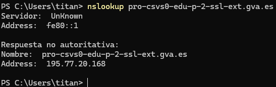
- ¿Cuál es el nombre canonico de aules.edu.gva.es?
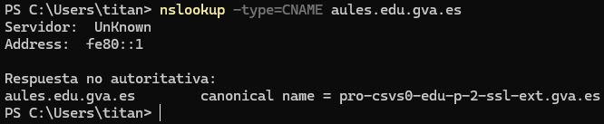
12.5 Paso 5: Confirmación de la IP
Pregunta
- ¿Qué ocurre si escribimos la IP en el navegador? ¿Se abre la web de aules.edu.gva.es?
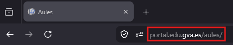
13 - Tarea RA2-CEbc-2 - Resolución manual de un dominio
Pregunta
- Redactar el comando para consultar el dominio gmail.es y obtener los servidores autoritativos de correo electrónico de gmail.es.
- Resultado esperado:
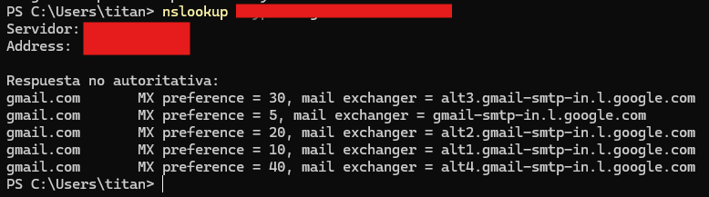
- Redactar el comando para consultar la IP de uno de los servidores.
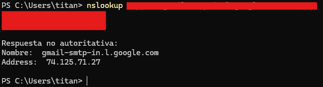
14 - Tarea RA2-CEbc-3 - Resolución manual de un dominio
15 - Tarea RA2-CEde-1 - Instalación y configuración de un servidor DNS con Windows Server 2025
Antes de instalar y configurar el rol de servidor DNS, instalaremos el rol de Active Directory Domain Services (AD DS), ya que en este caso queremos un DNS integrado en un dominio de Active Directory (el escenario más habitual en entornos empresariales).
Motivos:
- Aunque el rol DNS de Windows Server no requiere AD DS para funcionar, cuando DNS da servicio a un dominio de AD conviene que estén integrados.
- Al promover el servidor a controlador de dominio, si no existe ya un servidor DNS accesible para el dominio, Windows instala y configura automáticamente el rol DNS, creando la zona correspondiente con los registros SRV necesarios para la localización de los controladores de dominio (LDAP, Kerberos, etc.).
- Esto simplifica la práctica: en vez de instalar y configurar DNS manualmente y luego preparar la integración con AD, dejamos que el propio proceso de promoción a DC lo resuelva.
15.1 Active Directory Domain Services (AD DS)
- En una red doméstica, cada equipo se administra de forma individual: el usuario configura sus propios permisos, contraseñas, accesos a dispositivos, etc. En una empresa con decenas o cientos de equipos, gestionar la seguridad equipo por equipo es inviable al resultar lento, costoso y, sobre todo, inconsistente.
-
Una parte importante de los incidentes de seguridad en las organizaciones no se debe a fallos de las herramientas de protección (firewall, VPN, antivirus), sino a errores de configuración en los equipos y servicios de red. Por ello, es fundamental poder definir de forma centralizada qué puede o no puede hacer el usuario final en los equipos de la empresa, por ejemplo:
- Deshabilitar los puertos USB de los equipos de la empresa.
- Limitar el acceso a ciertos sitios web.
- Restringir el acceso al disco duro local de los equipos.
- Restringir el uso de archivos ejecutables descargados de Internet.
- Instalar software solo desde repositorios oficiales de la empresa.
- Forzar políticas de contraseñas seguras y definir la caducidad de las mismas.
-
AD DS es el rol de Windows Server que permite centralizar la gestión de identidades (usuarios, equipos, grupos) de toda la organización en un dominio, y aplicar de forma automática y uniforme políticas de seguridad y configuración mediante Directivas de Grupo (GPO – Group Policy Objects).
- Por este motivo, antes de instalar y configurar el rol de servidor DNS, instalaremos primero el rol de Active Directory Domain Services (AD DS): Será la base sobre la que se sustente la gestión centralizada de usuarios, equipos y políticas de seguridad de nuestra organización, y también porque el propio proceso de instalación de AD DS se encarga de configurar el servicio DNS necesario para el funcionamiento del dominio.
15.2 Instalación del rol AD DS en AWS
Para la instalación del rol AD DS en un servidor Windows Server 2025 en AWS, podemos seguir los siguientes pasos:
- Lanzar una nueva instancia de Windows Server 2025 en AWS. En este caso definiremos en qué subred de la VPC se encuentra la instancia EC2, ya que esto puede afectar a la conectividad y al rendimiento de la red.
- Resumen de la configuración de la instancia (acordarse de seleccionar el par de clave
vockeypara el inicio de sesión y seleccionar50GiBde capacidad para el volumen de la instancia).
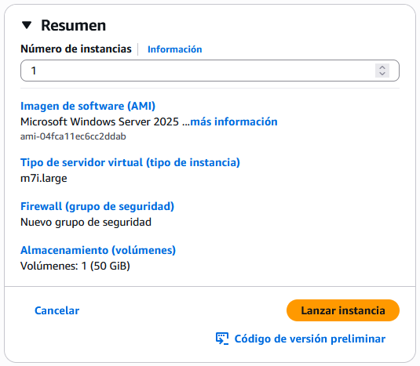
- Captura del apartado de configuración de red dónde eligiremos la Subred en la cual desplegaremos nuestra instancia.
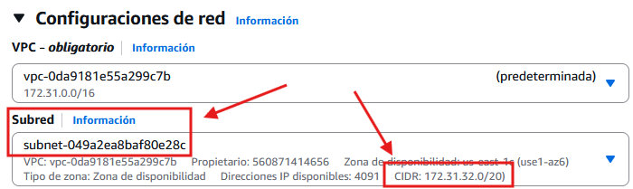
- Esperaremos a que la instancia esté disponible. A partir de entonces sí podremos conectar via
RDP.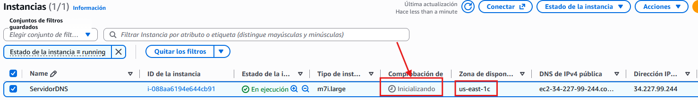
- Resumen de la configuración de la instancia (acordarse de seleccionar el par de clave
- Opcional: renombrar la máquina creada.
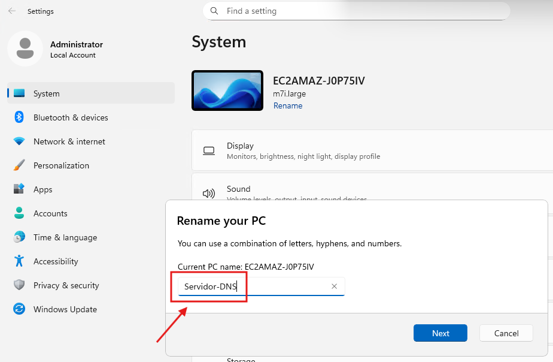
- En añadir rol seleccionamos Active Directory Domain Services (AD DS).
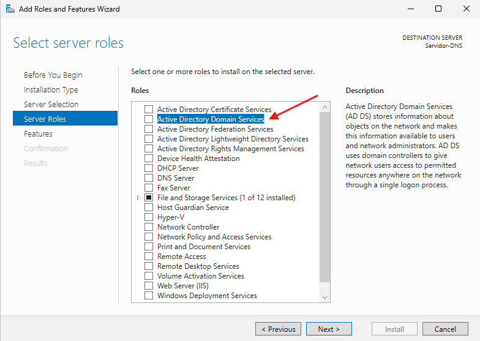
- Dejamos el resto de opciones con los valores por defecto. En la página de
Confirmationmarcamos la opción deRestart if required.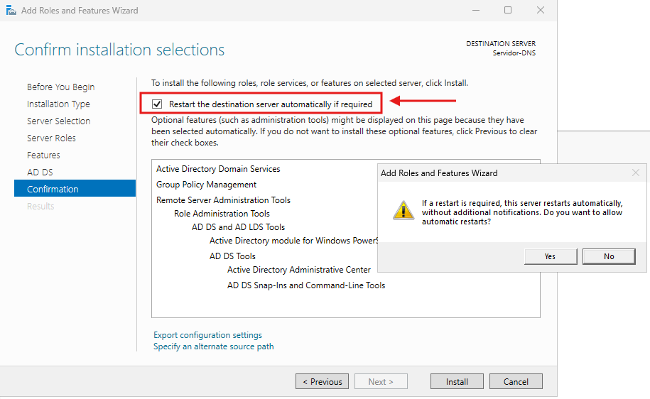
- Una vez finalizada la instalación del servicio el sistema nos pedirá promover el servidor a controlador de dominio.
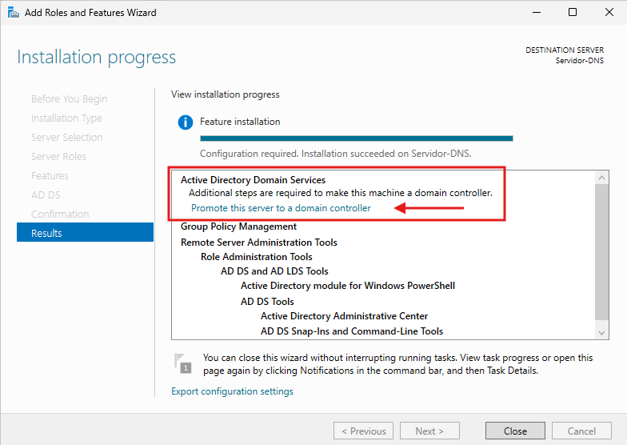
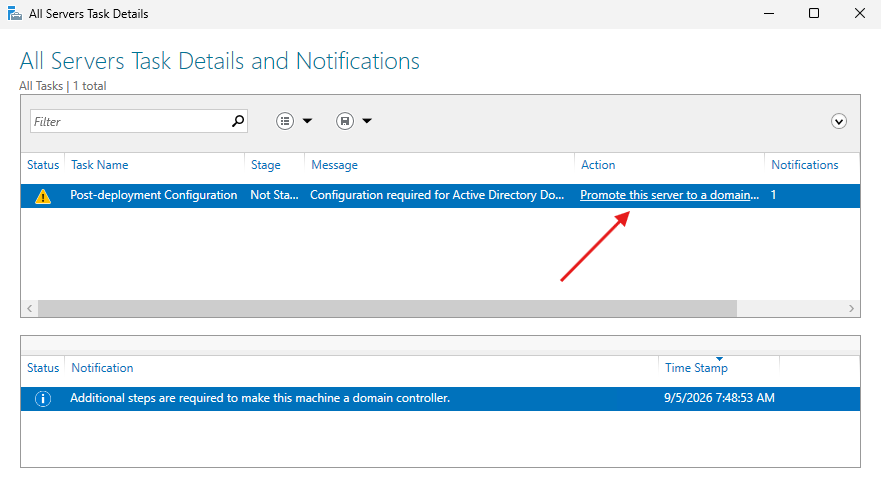
- En
Deployment ConfigurationseleccionamosAdd a new foreste introducimos un nombre de dominio para el dominio de AD interno. Por buena práctica de Microsoft se recomienda usar el nombre de dominio de la empresa (de internet) + un subdominio (ad).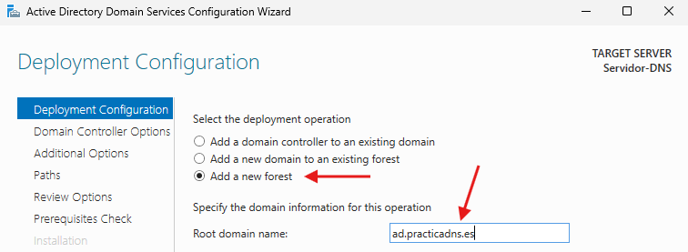
- Al ser un bosque nuevo, dejaremos los valores por defecto de los niveles funcionales.
Como AD requiere de un servidor DNS para funcionar, nos viene la opción DNS marcada por defecto.
Para finalizar introduciremos la contraseña de restauración de servicios de directorio (DSRM – Directory Services Restore Mode), que se utiliza para iniciar el servidor en modo de recuperación de AD en caso de fallo grave. No se recomienda que esta contraseña coincida con la contraseña de administrador.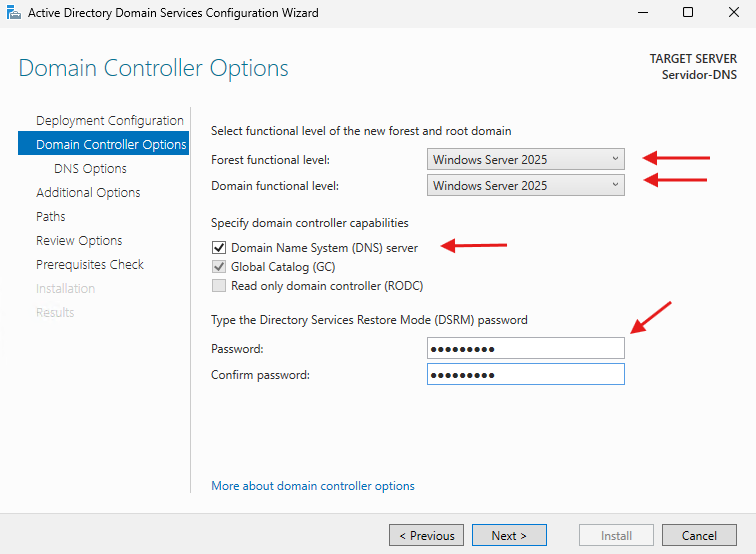
- En
DNS Optionsnos aparecerá un aviso indicando que no se puede crear una delegación para este servidor DNS, ya que no existe una zona superior (padre) que la administre.
Es un aviso esperado al crear un bosque nuevo (todavía no existe ningún dominio DNS previo al que delegar) y lo podemos ignorar.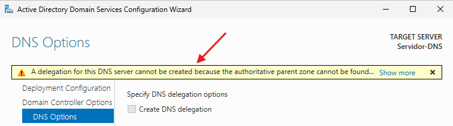
- En
Additional Optionsdejaremos el nombre por defecto de dominio de NetBIOS (solo para compatibilidad con equipos antiguos / obsoletos).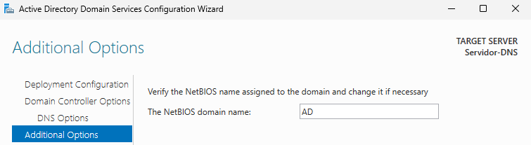
- Continuamos por las ventanas de
Paths(donde se define la ubicación de la base de datos de AD, los logs y el volumen SYSVOL) yReview Options(resumen de toda la configuración elegida).
EnPrerequisites Checkapuntaremos las advertencias para gestionarlas más adelante (entre ellas, es habitual que aparezca un aviso relacionado con la configuración de IP estática del servidor, que trataremos en el punto 12).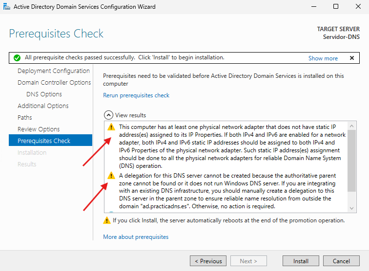
- Una vez reiniciada la máquina, veremos que aunque parezca que no ha ocurrido nada, ahora iniciamos sesión como DOMINIO\Administrador (cuenta de dominio) en lugar de como administrador local del servidor. Podemos comprobarlo, por ejemplo, ejecutando
whoamien una consola.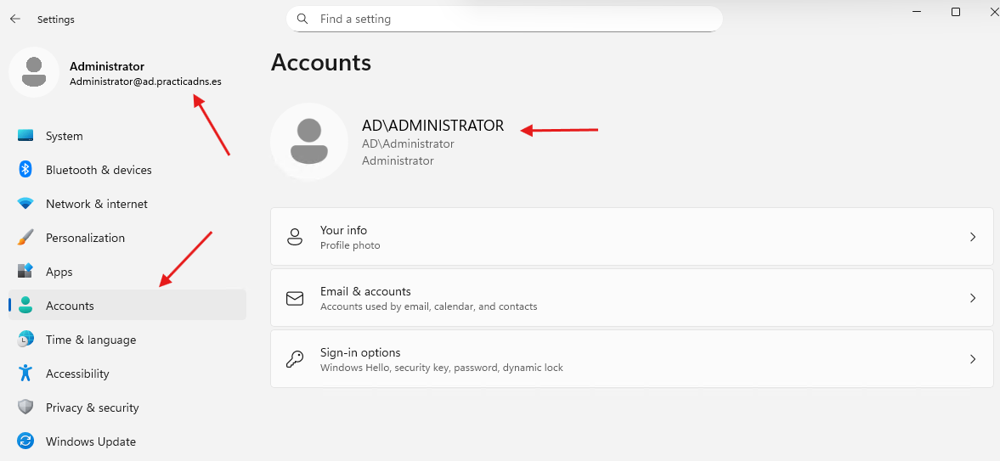
-
Active Directory necesita que la IP del controlador de dominio no cambie, ya que los registros DNS y SRV del dominio se generan sobre esa IP. En AWS, la IP privada de una instancia EC2 ya es estática por naturaleza mientras no se elimine la instancia (sobrevive a stop/start, reinicios, etc.), por lo que no es necesario realizar ningún cambio a nivel de AWS.
Aun así, es recomendable fijar esa misma IP privada como estática dentro de la configuración de red de Windows (en lugar de dejarla en modo DHCP), para evitar problemas si el adaptador de red se reinicia. Para ello, buscaremos en EC2 → Detalles la IP privada actual de nuestra instancia (en este ejemplo, 172.31.39.10) y configuraremos esa misma IP como estática en las propiedades de red de Windows.
Importante
- La IP que configuremos manualmente en Windows debe coincidir siempre con la IP privada que AWS ya tiene asignada a la instancia.
- Si configuramos una IP diferente, la instancia perderá la conectividad de red, ya que AWS solo enruta tráfico a las IPs asociadas a esa interfaz de red (ENI).
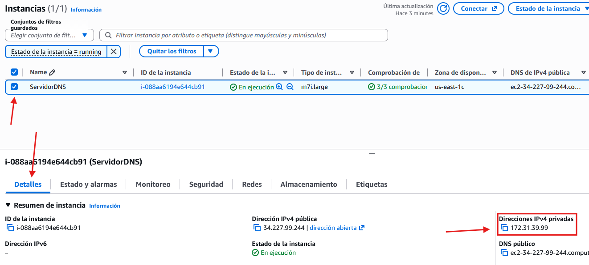
-
Si además de la IP privada estática queremos que el servidor tenga una IP pública fija para acceso desde Internet, esto se resuelve mediante una Elastic IP (EIP), que es un concepto independiente de la IP privada usada por AD/DNS internamente:
- Al crear una Elastic IP y asociarla a la instancia, esta IP pública no cambiará mientras esté asociada, ni siquiera si la instancia se detiene y se vuelve a iniciar.
- Si en el futuro queremos eliminar o reemplazar la instancia sin perder la IP pública, podemos mover la Elastic IP a una Elastic Network Interface (ENI) separada, que podremos desasociar y volver a asociar a otra instancia cuando haga falta.
-
En un entorno no AWS (no virtual), ¿cómo se configuraría la interfaz de red de nuestra máquina a IP estática?
- Después de un tiempo, aparecerán los servicios AD DS y DNS en nuestra máquina.
- Servicio AD DS
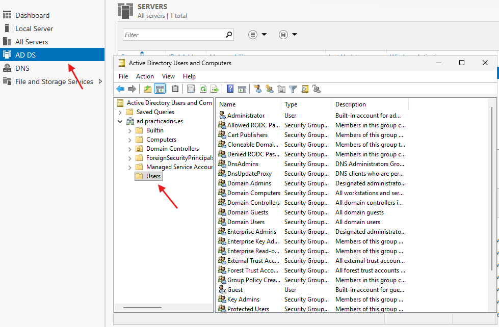
- Servicio DNS
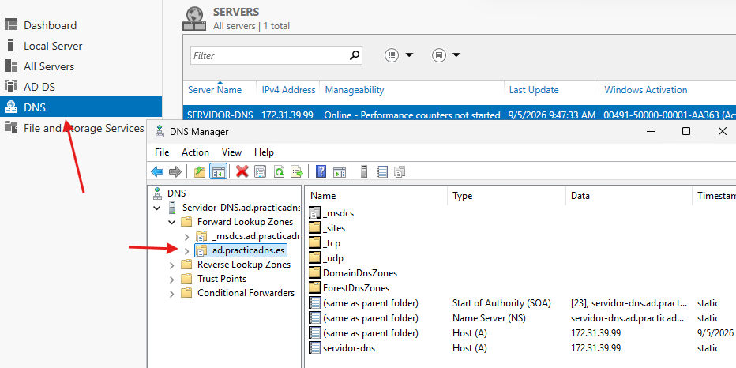
- Servicio AD DS
16 - Tarea RA2-CEf - Configuración del servidor DNS
16.1 Configuración del adaptador de red
-
Como ya hemos comentado, en AWS la instancia dispone de una dirección IPv4 privada asociada a su interfaz de red (ENI). Para un controlador de dominio es importante que esta dirección sea estable, ya que será utilizada por los clientes para localizar los servicios de Active Directory y DNS.
-
Si abrimos la configuración del adaptador de red veremos que el servidor DNS puede estar configurado para utilizar el propio servidor como servidor DNS. En nuestro caso, la dirección
127.0.0.1corresponde al localhost (la propia máquina), por lo que el servidor puede realizar consultas DNS contra sí mismo.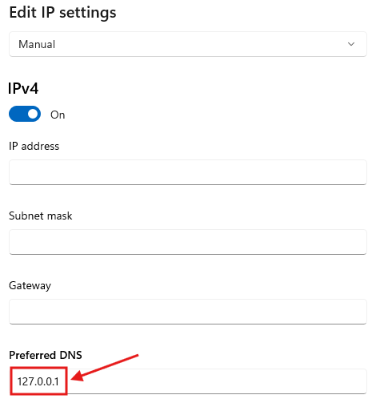
-
A efectos didácticos cambiaremos la dirección del DNS preferido a la dirección IPv4 privada de nuestra máquina (en el ejemplo,
172.31.39.99). De esta forma podremos identificar claramente cuál es la dirección del servidor DNS que utilizarán los equipos de nuestra red.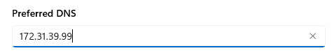
16.2 Configuración del DNS
-
Si abrimos las propiedades del servidor DNS veremos que en
Interfacesaparece la dirección IPv4 de nuestro servidor y, si IPv6 está habilitado, también puede aparecer una dirección IPv6. Windows puede asignar automáticamente a la interfaz una dirección IPv6 de tipo link-local (fe80::/10).
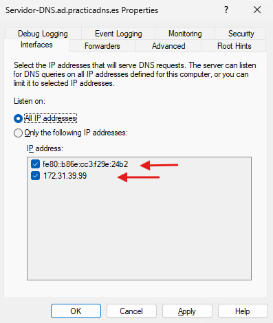
-
Es importante distinguir esta dirección de
::1, que es la dirección de loopback de IPv6 y equivale conceptualmente a127.0.0.1en IPv4. -
Si ejecutamos el comando
ipconfig /allveremos la configuración de red de nuestra interfaz. En nuestro caso, el servidor utiliza como DNS la dirección IPv4172.31.39.99y la dirección IPv6::1.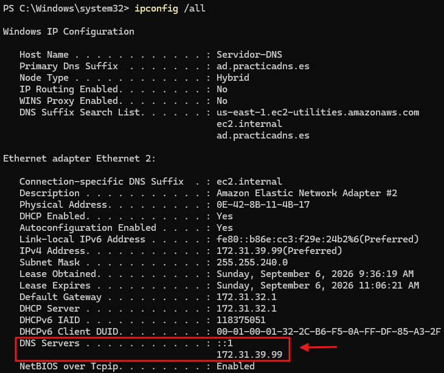
-
En
Forwarderspodemos configurar otros servidores DNS a los que nuestro servidor enviará las consultas que no pueda resolver utilizando sus propias zonas o la información almacenada en caché.
Por ejemplo, si un cliente solicita resolverwww.google.comy nuestro servidor DNS no dispone de esa información en sus zonas ni en su caché, puede reenviar la consulta a uno de los servidores configurados como forwarders. -
Aunque no es obligatorio utilizar servidores DNS externos en AWS, a efectos didácticos añadiremos un par de servidores DNS públicos:
Google DNS:
8.8.8.8
Cloudflare DNS:1.1.1.1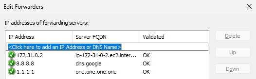
-
En la pestaña
Monitoringpodremos realizar diferentes pruebas para comprobar el funcionamiento del servidor DNS. También podremos comprobar la resolución recursiva de nombres externos.
Un resultado correcto en estas pruebas nos permitirá comprobar que nuestro servidor DNS puede resolver tanto los nombres pertenecientes a sus propias zonas como nombres externos mediante el mecanismo de resolución configurado.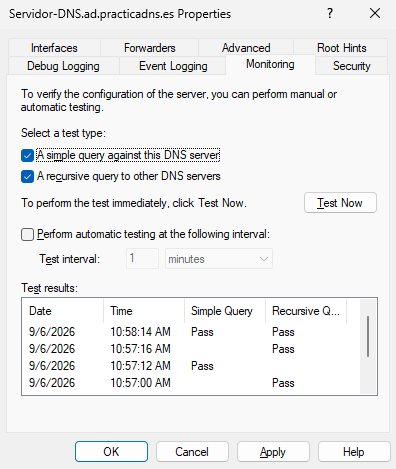
16.3 Configuración del AD DS
-
Si abrimos
Active Directory Users and Computersveremos las cuentas integradas que se han creado al instalar Active Directory.
Entre ellas se encuentranAdministratoryGuest.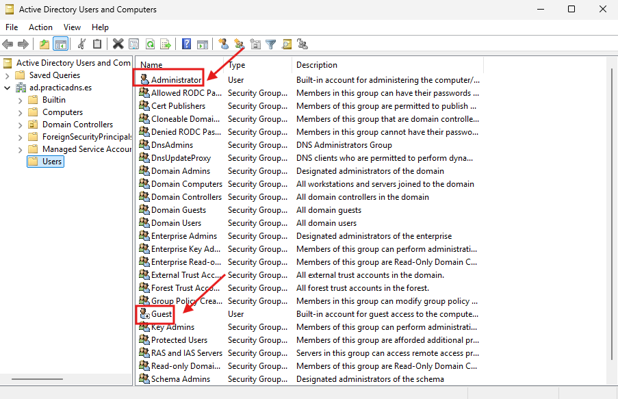
-
Una buena práctica consiste en crear una cuenta administrativa individual para cada administrador y utilizarla para realizar las tareas administrativas del dominio. De esta forma, las acciones realizadas sobre Active Directory pueden asociarse a una identidad concreta, facilitando la trazabilidad y la auditoría.
-
La cuenta integrada
Administratordebe conservarse adecuadamente protegida y puede reservarse para situaciones excepcionales de administración o recuperación. No es recomendable utilizarla como cuenta habitual de administración.Creamos una cuenta administrativa propia
Para evitar utilizar habitualmente la cuenta integrada
Administrator, crearemos una cuenta administrativa individual para realizar las tareas de administración del dominio.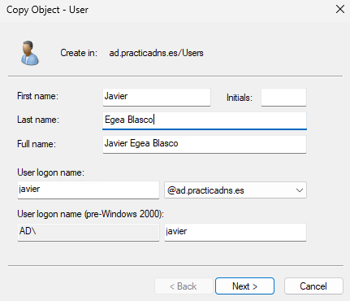
¡No reutilices la contraseña de Administrator!
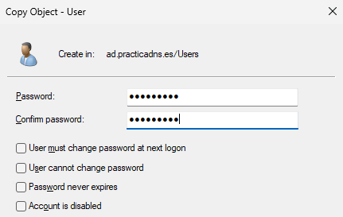
Importante
La nueva cuenta debe utilizar una contraseña diferente y robusta. Nunca debemos reutilizar la contraseña de una cuenta administrativa en otra cuenta.
-
Comprobaremos el estado de nuestro controlador de dominio mediante
dcdiag. Esta herramienta realiza diferentes pruebas sobre los servicios y componentes de Active Directory. Un resultado sin errores relevantes indica que el controlador de dominio funciona correctamente.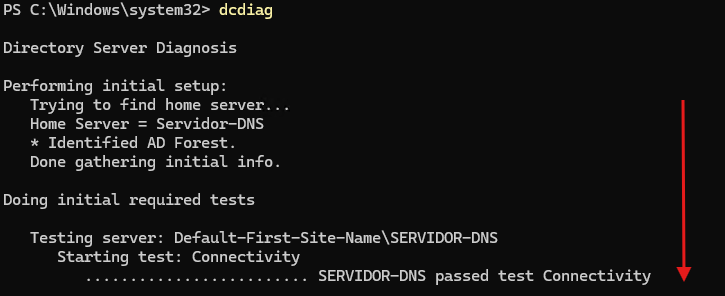
-
También podemos realizar una comprobación específica del servicio DNS mediante
dcdiag /test:dns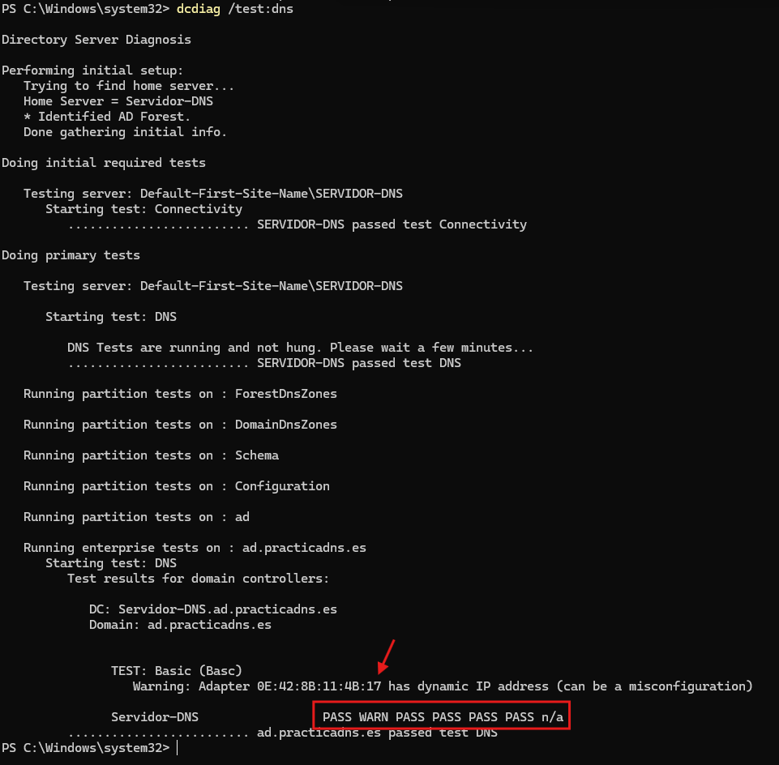
16.4 Opciones disponibles en la consola DNS de Windows Server 2025
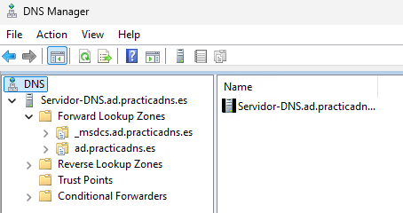
16.4.1 Forward Lookup zones
-
Las zonas de resolución directa (Forward Lookup Zones) contienen la información necesaria para realizar la resolución de nombres de dominio a direcciones IP.
-
Cuando un cliente DNS solicita la dirección IP asociada a un nombre, el servidor DNS consulta la zona de resolución directa correspondiente y devuelve la información disponible.
-
En Windows Server podemos crear diferentes tipos de zonas de resolución directa, entre ellas:
- Primary Zone: contiene la copia principal y modificable de los registros DNS de la zona.
- Secondary Zone: contiene una copia de solo lectura de una zona primaria y obtiene la información mediante una transferencia de zona.
- Stub Zone: contiene únicamente los registros necesarios para identificar los servidores DNS autoritativos de una zona.
-
Cuando el servidor DNS está integrado con Active Directory Domain Services (AD DS), también podemos crear una zona integrada en Active Directory. En este caso, la información de la zona se almacena en Active Directory y puede replicarse automáticamente entre los controladores de dominio.
16.4.2 Reverse Lookup zones
-
Las zonas de resolución inversa (Reverse Lookup Zones) permiten realizar el proceso contrario a una zona de resolución directa: obtener un nombre DNS a partir de una dirección IP.
-
Para la resolución inversa se utilizan principalmente registros PTR (Pointer).
16.4.3 Trust Points
-
Los Trust Points o puntos de confianza están relacionados con la seguridad del servicio DNS mediante DNSSEC (Domain Name System Security Extensions) .
-
Un punto de confianza permite indicar al servidor DNS qué información criptográfica debe considerar de confianza para poder validar las respuestas DNSSEC.
-
De esta forma, el servidor puede comprobar que determinadas respuestas DNS no han sido modificadas y que proceden de una fuente autenticada mediante DNSSEC.
-
Los Trust Points son especialmente importantes cuando el servidor DNS actúa como servidor validador DNSSEC, ya que permiten establecer el punto de partida de la cadena de confianza utilizada durante la validación.
16.4.4 Conditional Fowarders
-
Los Conditional Forwarders o reenviadores condicionales permiten indicar al servidor DNS que, para determinadas zonas DNS, debe enviar las consultas a unos servidores DNS concretos.
-
Son especialmente útiles cuando existen diferentes dominios o redes DNS que necesitan comunicarse entre sí.
16.5 Agregar de forma manual dispositivos al dominio
- Todos los equipos que agragaremos al dominio deben tener como servidor DNS preferido la dirección IP del controlador de dominio. De esta forma, los equipos podrán localizar los servicios de Active Directory y autenticarse correctamente en el dominio.
- Esos equipos serán agregados automáticamente a la zona DNS del dominio, y se crearán los registros correspondientes en la zona directa e inversa.
- No obstante, si queremos agregar un equipo al dominio sin que se cree automáticamente el registro en la zona DNS, podemos crear de forma manual un registro A y un registro PTR para ese equipo.
- Para simular esta situación, en nuestra práctica, lanzaremos una instancia EC2 adicional que actuará como cliente del dominio (p.e. Servidor-NAS). Esta instancia tendrá un sistema operativo ubuntu 22.04 y se conectará a la misma VPC y subred que el controlador de dominio.
16.5.1 Lanzar instancia EC2
En la consola de AWS, lanzaremos una nueva instancia EC2 con Ubuntu 22.04.
- Captura del apartado de configuración de red dónde veremos en qué subred se encuentra nuestro servidor DNS.
- Captura del apartado de configuración de red dónde elegimos la subred a la hora de lanzar la instancia.
- Resumen de la configuración de la instancia (acordarse de seleccionar el par de clave
vockeypara el inicio de sesión y de seleccionar la misma subred que el controlador de dominio).
- Esperaremos a que la instancia esté disponible. A partir de entonces, sí lo deseamos, nos podremos conectar via
SSHa la instancia.
16.5.2 Comprobación de resolución DNS antes de añadir el equipo al dominio
- Antes de agregar la dirección IP del nuevo equipo al DNS del dominio, comprobaremos que el servidor DNS no puede resolver el nombre del equipo.
-
Para ello, desde el propio servidor DNS, abriremos una consola y ejecutaremos el comando:
16.5.3 Añadir registro de tipo A al DNS
- Para añadir de forma manual un registro A y un registro PTR para el equipo Servidor-NAS, abriremos la consola de administración del servidor DNS y crearemos un nuevo registro A en la zona directa del dominio.
- En el ejemplo, añadiremos un registro A para el equipo Servidor-NAS con la dirección IP
172.31.38.70(la IP privada de la instancia EC2 que hemos lanzado previamente). - Una vez creado el registro A, se creará automáticamente un registro PTR correspondiente en la zona inversa del dominio. En este caso fallerá la creación del registro PTR, ya que no existe una zona inversa para la subred de nuestra VPC. Por ello, el registro PTR no se creará automáticamente y tendremos que crearlo de forma manual.
- Repetiremos el lookup para comprobar que ahora el servidor DNS puede resolver correctamente el nombre del equipo Servidor-NAS.
16.6 Zona inversa
- Como hemos visto al añadir un registro A para el equipo Servidor-NAS, no se ha creado automáticamente un registro PTR al no existir ninguna zona inversa. Si hacemos un lookup de la IP del equipo Servidor-NAS, el servidor DNS no puede resolver la dirección IP a un nombre de dominio.
- Creamos la zona inversa correspondiente a la subred de nuestra VPC.
- Creamos el registro PTR correspondiente al registro A del equipo Servidor-NAS. En este caso se le dará un nombre diferente al del registro A, ya que el nombre del equipo Servidor-NAS ya está registrado en la zona directa. En este caso, se le dará el nombre
MiServidorNAS. - Repetiremos el lookup para comprobar que ahora el servidor DNS puede resolver correctamente el nombre desde la IP.
16.7 Aging y Scavenging
-
En un servidor DNS pueden existir registros que dejan de ser válidos porque los equipos cambian de dirección IP, se desconectan de la red o dejan de existir.
-
Para evitar que estos registros antiguos permanezcan indefinidamente en la zona DNS, Windows Server dispone de los mecanismos Aging y Scavenging.
- Aging (envejecimiento): permite determinar cuánto tiempo puede permanecer un registro sin ser actualizado antes de considerarlo antiguo.
- Scavenging (limpieza): permite eliminar automáticamente los registros que han sido considerados antiguos.
Ejemplo
- Si un equipo obtiene mediante DHCP la dirección:
y posteriormente deja de utilizar esa dirección, el registro DNS:
podría quedar almacenado aunque ya no sea válido.
Con Aging y Scavenging, el servidor DNS puede detectar que el registro lleva demasiado tiempo sin actualizarse y eliminarlo automáticamente.
Registros dinámicos
- Aging y Scavenging son especialmente útiles para los registros DNS dinámicos, como los que pueden ser creados o actualizados automáticamente por los clientes DNS o por un servidor DHCP.
- Los registros creados manualmente pueden quedar excluidos del proceso de limpieza si no están configurados para participar en Aging y Scavenging.
Relación con DHCP
- Cuando se utiliza DHCP junto con DNS dinámico, es importante configurar los intervalos de Aging y Scavenging teniendo en cuenta la duración de las concesiones DHCP.
- Una regla para configurar los valores de aging y scanvenging sería:
- Los intervalos deben ser suficientemente largos para que un equipo pueda renovar su concesión DHCP y actualizar su registro DNS antes de que este sea considerado obsoleto.
Idea clave
- Aging determina cuándo un registro puede considerarse antiguo y Scavenging permite eliminarlo automáticamente.
- Son mecanismos especialmente útiles en redes donde las direcciones IP cambian con frecuencia, como ocurre cuando se utiliza DHCP.
16.7.1 Determinación del lease del sercidor DHCP
-
Como ya hemos comentado, en rol DHCP es asumido por AWS y no es posible modificarlo. Solo es posible añadir conjuntos de opciones que solo afectan a:
- Los servidores DNS, los nombres de dominio o los servidores de protocolo de tiempo de red (NTP) utilizados por los dispositivos de la VPC.
- Si la resolución de DNS está habilitada en la VPC.
-
Para determinar el lease del DHCP usaremos el comando:
-
Activamos la opción de Aging y scavenging y no aseguramos de que el lease es inferior a la suma de Aging + scavenging.
16.8 Best practices analyzer (BPA)
-
Lanzamos el BPA y esperamos hasta obtener los resultados.
-
Como veremos, gran parte de las advertencias están relacionadas con IPv6 que no están configuradas en nuestro entorno.
- En un entorno real, los errores deberán solucionarse ya que afectarán al rendimiento y la capacidad de resolución de nombres de nuestro servidor DNS.
Comentar brevemente los errores encontrados así como sus posibles soluciones.
17 - Tarea RA2-CEabcde - Configuración de un segundo Controlador de Dominio y DNS
-
En entornos de producción, disponer de un único servidor representa un punto único de fallo (Single Point of Failure).
-
Desplegar un segundo controlador de dominio con DNS y AD DS responde a cuatro razones esenciales:
-
Alta disponibilidad y tolerancia a fallos: Si el servidor principal cae, falla el hardware o se reinicia por mantenimiento, el segundo servidor asume la autenticación de usuarios y la resolución DNS sin interrupciones en la red.
-
Balanceo de carga: Distribuye el tráfico de peticiones de inicio de sesión, directivas de grupo (GPO) y consultas DNS entre ambos equipos para no saturar el servidor principal.
-
Replicación automática: Al integrar DNS dentro de Active Directory (arquitectura multi-master), cualquier cambio en usuarios, equipos o registros de red se sincroniza automáticamente en ambos servidores.
-
Recuperación ante desastres: Evita la pérdida total de la base de datos de la empresa si el servidor primario queda inservible.
-
-
En esta práctica haremos lo siguiente:
- Lanzaremos una segunda instancia de Windows Server 2025 (y le asignaremos una IP estática).
- Uniremos la segunda instancia al dominio existente.
- Instalaremos el rol de AD DS y promocionaremos el servidor a Controlador de Dominio adicional (incluyendo el rol de servidor DNS de forma integrada).
- Reconfiguraremos los DNS en ambas interfaces de red para que se apunten de forma cruzada (el DC1 apuntará al DC2 como preferido y a sí mismo como alternativo, y viceversa) para garantizar redundancia.
17.1 Lanzar una segunda instancia de Windows Server 2025
-
Lanzaremos una instancia nueva de Windows Server 2025 con estás características.
-
Antes de definir totalemente la nueva instancia, comprobaremos la subred de la primera instancia de Windows Server.
Nota: Para las prácticas estamos usando la VPC y las subredes del laboratory. Cada subred (6 en total) concide con una zona de disponibilidad lo que hace fácil su identificación. -
Al lanzar la nueva instancia, nos aseguraremos de que la subred (zona de disponibilidad) coincide con la de la primera instancia.
-
Nos esperaremos hasta que las 2 instancias (ServidorDNS-1 y ServidorDNS-2) estén disponibles.
17.2 Modificar los grupos de seguridad de las instancias
-
Un grupo de seguridad funciona como un firewall virtual para las instancias de EC2 para controlar el tráfico entrante y saliente.
-
Las reglas de entrada controlan el tráfico entrante a la instancia y las reglas de salida controlan el tráfico saliente desde la instancia.
-
Modificaremos las reglas de los grupos de seguridad para permitir el tráfico en los puertos de Active Directory (como TCP/UDP 53, 88, 389, 445 y 636).
Aunque no sea una buena práctica de seguridad informática, abriremos todos los puertos para evitar problemas con nuestras máquinas.
17.3 Agregar la segunda instancia al dominio
-
Nos conectamos a la instancia 2 (ServidorDNS-2) y cambiamos el nombre de la máquina a Servidor-DNS-2.
-
Agregamos la instancia al dominio definido en nuestra primera máquina (ServidorDNS).
Para ello vamos aSystem→About→Domain or workgroup.
En la imagen vemos que la máquina tieneWORKGROUPcomo dominio por defecto.
PulsamosChangee introducimos el dominio definido en la primera máquina.
Si da error, solucionar el problema leyendo los details del error
-
Necesitaremos introducir las credenciales de administrador del dominio al que queremos agregar la máquina.
-
Si todo ha ido bien, recibiremos una aviso de bienvenida.
-
También deberemos reiniciar la máquina.
-
Si vamos a
AD DS→Active Directory Users and Computersveremos la máquina que acabamos de agregar se encuentra enComputers. -
Si vamos a
DNS→DNS Manager→Forward Lookup Zonespodremos comprobar que se ha generado en el DNS un registroHostde tipoApara la segunda instancia.
17.3 Promocionar la segunda instancia a controladora de dominio
- Agregaremos un nuevo ROL a nuestra máquina y la seleccionaremos dentro del grupo de servidores.
- Seleccionamos el servicio que queremos agregar.
- Aceptamos la características que se añadiran al implementar al AD DS en la máquina.
- Confirmamos la operación. A diferencia de la primera máquina, aquí, no nos pide crear un servidor DNS al detectar que ya existe uno en el dominio (como veremos más adelante, el rol DNS se instalará automaticamente al promocionar la segunda instancia a controladora de dominio).
- Una vez finalizada la instalación, deberemos promocionar la máquina a controladora de dominio.
- Añadiremos el AD DS al dominio actual.
- Introducimos las credenciales de la copia de administrador.
- Introducimos una contraseña para el modo restauración.
- Vamos pasando todas las ventanas dejando las opciones por defecto.
- En la ventana final nos aseguramos que todos los prerequisitos se cumplen correctamente.
- Después de reiniciar la máquina veremos que tenemos las 2 máquinas como controladoras de dominio.
17.4 Crear el rol DNS en la segunda instancia
- Comprobaremos que el ROL DNS ya se ha creado en la segunda instancia.
17.5 Configuración de los DNS en las instancias
Comprobaremos que las interfaces de red en cada instancia cumplen las reglas de la siguiente tabla.
| DNS preferido | DNS segundario | |
|---|---|---|
| Instancia 1 | IP instancia 2 | IP instancia 1 |
| Instancia 2 | IP instancia 1 | IP instancia 2 |
-
Configuración instancia 1
-
Configuración instancia 2
17.6 Configuración de los reenviadores (fowarders)
¿Qué son los reenviadores?
¿Cuál es su función?
- También comprobaremos que los reenviadores están configurados correctamente.
Para ello, accederemos a las propiedades de los servidores DNS de nuestras máquinas.
16 - Tarea RA2-CEde-2 - Instalación y configuración de un servidor DNS con BIND9 en Ubuntu Server 26.04 LTS
16.1 Objetivos
-
En esta práctica crearemos una pequeña red dentro de Amazon Web Services (AWS) formada por tres instancias EC2.
-
Una de las instancias actuará como servidor DNS utilizando BIND9 y las otras dos actuarán como clientes.
-
Aparte de las VPC, subredes, puertas de enlace, grupos de seguridad y tablas de enrutamiento que son las que vienen por defecto en AWS, configuraremos:
-
Tres instancias EC2 con Ubuntu Server 26.04 LTS.
- Un servidor DNS BIND9.
- Una zona DNS directa.
- Dos zonas DNS inversas.
- Registros A, CNAME, NS, SOA y PTR.
- Resolución DNS desde los clientes.
- Reenvío de consultas DNS no resueltas hacia Internet.
Al finalizar la práctica tendremos una arquitectura similar a:
INTERNET
│
│
┌─────────▼─────────┐
│ Internet Gateway │
└─────────┬─────────┘
│
VPC: 10.0.0.0/16
│
┌────────────────┴────────────────┐
│ │
Subred servidores Subred clientes
10.0.1.0/24 10.0.2.0/24
│ │
┌───────▼────────┐ ┌──────────┴──────────┐
│ DNS-SERVER │ │ │
│ Ubuntu Server │ ┌──────▼──────┐ ┌──────▼──────┐
│ BIND9 │ │ CLIENTE-1 │ │ CLIENTE-2 │
│ 10.0.1.10 │ │ 10.0.2.10 │ │ 10.0.2.20 │
└────────────────┘ └─────────────┘ └─────────────┘
Utilizaremos el dominio:
Por tanto:
¿Por qué utilizamos smr.test?
Para una práctica es preferible utilizar un dominio reservado para pruebas como `.test`.
No utilizaremos `.local`, ya que este sufijo tiene un significado especial relacionado con **mDNS (Multicast DNS)** y puede provocar resultados inesperados en algunos sistemas operativos.
UDP y TCP
DNS utiliza principalmente **UDP 53**, pero también puede utilizar **TCP 53**.
Por tanto, debemos permitir ambos protocolos.
No es necesario permitir DNS desde:
Nuestro servidor DNS será exclusivamente para los equipos de nuestra red privada.
16.2 Lanzar instancias
16.2.1 Instancia Servidor-DNS
Lanzaremos una instancia que hará de servidor DNS con las siguiente características.
- Sistema operativo Ubuntu Server 26.04 LTS.
- Tipo de instancia, par de claves y configuración de red.
- Almacenamiento.
16.2.2 Instancias Clientes
-
Sistema operativo Ubuntu Server 26.04 LTS.
-
Tipo de instancia, par de claves y configuración de red.
-
Almacenamiento.
16.2.3 Resumen de instancias
-
Después de lanzar las 3 instancias (servidor DNS + 2 clientes) tendremos:
Máquina Dirección privada Función Servidor-DNS 172.31.XX.XXServidor BIND9 Cliente-1 172.31.XX.XXCliente DNS Cliente-2 172.31.XX.XXCliente DNS
Realizar captura de pantalla
16.3 Visualizar las reglas de la tabla de enrutamiento
Para ver/modificar la tabla de enrutamiento de la red que estamos utilizando haremos lo siguiente:
- En la consola de AWS introducimos VPC. Una vez que el servicio aparezca, lo seleccionamos.
- En el panel de VPC, seleccionamos nuestra VPC (solo hay 1).
- En la pestaña
Mapa de rescursos, veremos todos los recursos asociados a nuestra red. Realizar captura de pantalla - Después de seleccionar el recurso asociado a la tabla de enrutamiento podremos ver/editar las reglas de enrutamiento.
16.4 Modificación de los grupos de seguridad para permitir plena comunicación entre instancias
¿Qué es un grupo de seguridad?
- Un Grupo de Seguridad (Security Group) en AWS es un firewall virtual con estado (stateful) que controla el tráfico de entrada (ingress) y salida (egress) a nivel de la interfaz de red (ENI) de una instancia o recurso (como una máquina virtual EC2 o una base de datos RDS).
- Funciona como la primera línea de defensa para restringir qué tipo de tráfico IP, puerto o protocolo tiene permitido entrar o salir.
- Vamos a
EC2→ Seleccionamos una de las instancias → Abrimos el grupo de seguridad asociado a la instancia. - Editamos las reglas de entrada.
- Aunque no sea una buena práctica, abriremos todos los puertos.
Realizar captura de pantalla - Repetiremos esta operación en los grupos de seguridad de las 2 instancias restantes.
Realizar captura de pantalla
16.5 Comprobar la conectividad a las instancias
-
Nos conectaremos mediante SSH a las máquinas Cliente-1 y Cliente-2.
-
Desde Cliente-1 comprobaremos que tenemos 'ping' con las otras instancias (Servidor-DNS y Cliente-2).
Para ello usaremos el siguiente comando: -
Desde Cliente-2:
Si no se pierden paquetes, entonces, dispondremos de comunicación entre las instancias.
¿Por qué las instancias pueden comunicarse si están en subredes diferentes?
16.6 Instalar BIND9
-
Vamos a proceder a la instalación de BIND9 en la instancia
Servidor-DNS. -
Para ello nos conectaremos a:
- Actualizaremos los repositorios e la instalaremos. - Como nos sugiere el log, reiniciaremos la instancia.
Realizar captura de pantalla
-
Luego, instalaremos BIND9 y sus paquetes.
- Comprobaremos el servicio con cualquiera de estos 2 comandos:
Realizar captura de pantalla
- Comprobaremos que el servicio DNS escucha en el puerto 53:
Realizar captura de pantalla
16.7 Configuración mínima de BIND9
- Antes de nada accederemos al archivo
/etc/bind/named.conf.optionsy realizaremos una copia de seguridad del mismo.
- Luego, editaremos
named.conf.optionspara completar la configuración del servidor DNS.
- Una vez dentro del editor de texto incorporamos al archivo la siguiente configuración:
options {
directory "/var/cache/bind";
// Activar la resolución recursiva
recursion yes;
// Permitir consultas solo desde localhost y la red interna
allow-query {
localhost;
172.31.0.0/16;
};
// Permitir recursión solo a clientes de la red interna
allow-recursion {
localhost;
172.31.0.0/16;
};
// IPs donde escucha BIND9
listen-on {
127.0.0.1;
172.31.81.127;
};
// No atender peticiones IPv6
listen-on-v6 { none; };
// Reenviar las consultas no resueltas a DNS externos
forwarders {
172.31.0.2;
1.1.1.1;
8.8.8.8;
};
// Usar únicamente los forwarders, sin resolver desde los servidores raíz
forward only;
// No permitir transferencias de zona
allow-transfer { none; };
// Validar firmas DNSSEC (valor por defecto en BIND 9.16+)
dnssec-validation auto;
};
- Con el siguiente comando comprobaremos si tenemos errores en el archivo de configuration.
Realizar captura de pantalla
Explicar los errores (si los hay).
Explicar la solución que habeís aportado para resolver los errores.
- Comprobaremos si el servicio DNS está operativo.
Realizar captura de pantalla
Explicar los errores (si los hay)
Explicar la causa de esos errores.
16.8 Declarar la zona directa y la zona inversa
- Haremos una copia de seguridad del archivo de configuración (en entorno de pruebas)
named.conf.local.
- Editamos
named.conf.localy añadimos.
// Zona directa
zone "practicadns.test" {
type master;
file "/etc/bind/db.practicadns.test";
allow-update { none; };
};
// Zona inversa (172.31.0.0/16)
zone "31.172.in-addr.arpa" {
type master;
file "/etc/bind/db.172.31";
allow-update { none; };
};
Zona inversa
- Para la red 172.31.0.0/16 la zona inversa se llama
31.172.in-addr.arpa. - Se escriben al revés solo los dos primeros octetos, porque el /16 fija esos dos.
16.9 Crear el archivo de zona directa
- Para solucionar el error detectado anteriormente, crearemos un archivo de zona.
# Realizamos una copia de seguridad del archivo original (si existe)
sudo cp /etc/bind/db.local /etc/bind/db.practicadns.test
# Editamos o creamos el archivo
sudo nano /etc/bind/db.practicadns.test
- Luego pegaremos la siguiente configuración.
$TTL 604800
@ IN SOA ns1.practicadns.test. admin.practicadns.test. (
2026092301 ; Serial
604800 ; Refresh
86400 ; Retry
2419200 ; Expire
604800 ) ; Negative Cache TTL
;
@ IN NS ns1.practicadns.test.
ns1 IN A 172.31.81.127
www IN A 172.31.81.127
Explicación de la configuración
- ns1 significa name server 1 (servidor de nombres 1). Es el nombre del host que actúa como servidor DNS de la zona. Por convención se llama ns1, y un segundo servidor se llamaría ns2, pero se le puede poner cualquier nombre (dns, servidor, etc.).
- En el SOA (ns1.practicadns.test.): indica cuál es el servidor primario de la zona, es decir, el que tiene la copia original de los datos.
- En el registro NS (@ IN NS ns1.practicadns.test.): declara que ns1.practicadns.test. es un servidor autoritativo para la zona practicadns.test (un registro NS apunta siempre a un nombre, no a una IP).
- En el registro A (ns1 IN A 172.31.81.127): traduce ese nombre a una IP. Es lo que permite encontrar el servidor. Sin este registro, el NS apuntaría a un nombre que nadie sabe resolver y la zona no cargaría.
- En el registro A (www IN A 172.31.81.127): traduce un hipotetico servidor web.
- Validamos y reiniciamos.
# Comprueba la configuración de BIND (named.conf)
sudo named-checkconf
# Comprueba que el archivo de zona es correcto
sudo named-checkzone practicadns.test /etc/bind/db.practicadns.test
# Reiniciamos el servicio
sudo systemctl restart bind9
Realizar captura de pantalla
- Hacemos una prueba de resolución.
Realizar captura de pantalla
16.10 Crear el archivo de zona inversa
- También crearemos el archivo de zona inversa (siempre realizar una copia de seguridad si el archivo existe).
- Pegaremos la siguiente configuración.
$TTL 604800
@ IN SOA ns1.practicadns.test. admin.practicadns.test. (
2026092301 ; Serial
604800 ; Refresh
86400 ; Retry
2419200 ; Expire
604800 ) ; Negative Cache TTL
;
@ IN NS ns1.practicadns.test.
127.81 IN PTR ns1.practicadns.test.
127.81 IN PTR www.practicadns.test.
- Validamos y reiniciamos
sudo named-checkconf
sudo named-checkzone 31.172.in-addr.arpa /etc/bind/db.172.31
sudo systemctl restart bind9
Realizar captura de pantalla
- Probamos la resolución inversa
Realizar captura de pantalla
- Comprobamos el estado del servicio DNS
Realizar captura de pantalla
Explicar los errores (si los hay).
Explicar la causa de esos errores.
16.11 Añadir los clientes a los registros del DNS
16.11.1 Asociar el DHCP Options Set de la VPC
-
Ahora mismo todas las instancias (DNS, Cliente-1 y Cliente-2) de nuestra VPC reciben el DNS predeterminado de AWS.
-
Si nos conectamos a cualquier instancia que hemos lanzado y buscamos el DNS primario veremos lo siguiente.
-
Para evitar de configurar manualmente cada instancia podemos modificar la configuración de nuestra VPC para que las instancias reciban nuestro servidor como DNS primario.
-
Accedemos a
VPC → Conjuntos de opciones de DHCP → Crear conjunto de opciones de DHCP. Luego introducimos el dominio y la ip de nuestro servidor DHCP -
Luego vamos a
VPC → Acciones → Editar la configuración de VPC, seleccionamos nuestro conjunto de opciones de DHCP.
-
Después de reiniciar, veremos nuestro servidor DNS como el predefinido para todas las instancias de la VPC.
Realizar captura de pantalla
HASTA AQUI